Purpose
Analyze selection on and plastic responses of floral and vegetative traits of Ipomopsis aggregata to manipulations of snowmelt and summer precipitation. Determine whether plasticity is adaptive (improves survival and reproduction). Part of a larger project to understand the potential for evolutionary rescue in alpine plants under climate change.
Treatments
library(tidyverse)
library(lubridate)
#library(googlesheets4)
library(lme4)
library(lmerTest)
library(MuMIn)
library(emmeans)
library(broom)
library(broom.mixed)
library(vegan)
library(RColorBrewer)
library(viridis)
library(gridExtra)
library(GGally)
library(ggvegan)
library(ggnewscale)
library(knitr)
knitr::opts_chunk$set(comment="", cache=T, warning = F, message = F, fig.path = "images/")
signif.num <- function(x) {
as.character(symnum(x, corr = FALSE, na = FALSE, legend = FALSE,
cutpoints = c(0, 0.001, 0.01, 0.05, 0.1, 1),
symbols = c("***", "**", "*", ".", " ")))
}
print_anova_table <- function(df, mod) {
df %>% select(c("trait", "term", "p.value")) %>%
mutate(p.value=p.value %>% map_chr(~ format(.x,scientific=-2, digits=2 , nsmall=2)) %>%
str_replace("e-0(\\d)"," x 10^-\\1^") %>% str_replace("e-(\\d+)"," x 10^-\\1^")) %>%
pivot_wider(names_from=term, values_from=p.value) %>%
mutate(singular = map_lgl(mod, isSingular),
R2m = map_dbl(mod, ~ MuMIn::r.squaredGLMM(.x)[[1,"R2m"]])) %>%
kable
}
load("data/maxfield_data.rda")subplot_offset <- 1/6
size_meter <- 6
ggplot(treatments_map) + coord_fixed(clip="off")+
geom_point(aes(x=plot_x, y=plot_y, fill=snow), size=7*size_meter, shape=22, stroke=1)+
scale_fill_manual("Snowmelt", values=snow_pal, guide=guide_legend(override.aes = list(size = 2*size_meter)))+
new_scale_fill()+
geom_point(aes(x=plot_x+subplot_x*subplot_offset, y=plot_y+subplot_y*subplot_offset, fill=water4), size=2*size_meter, shape=22, stroke=1) +
geom_text(aes(x=plot_x+subplot_x*subplot_offset, y=plot_y+subplot_y*subplot_offset, label=subplot)) +
scale_fill_manual("Precipitation", values=water4_pal) +
geom_text(aes(x=plot_x, y=plot_y, label=plot))+
theme(legend.position="left", axis.title=element_blank(), axis.text = element_blank(), axis.ticks = element_blank(), panel.background = element_blank(), panel.grid = element_blank(), legend.box.background = element_blank())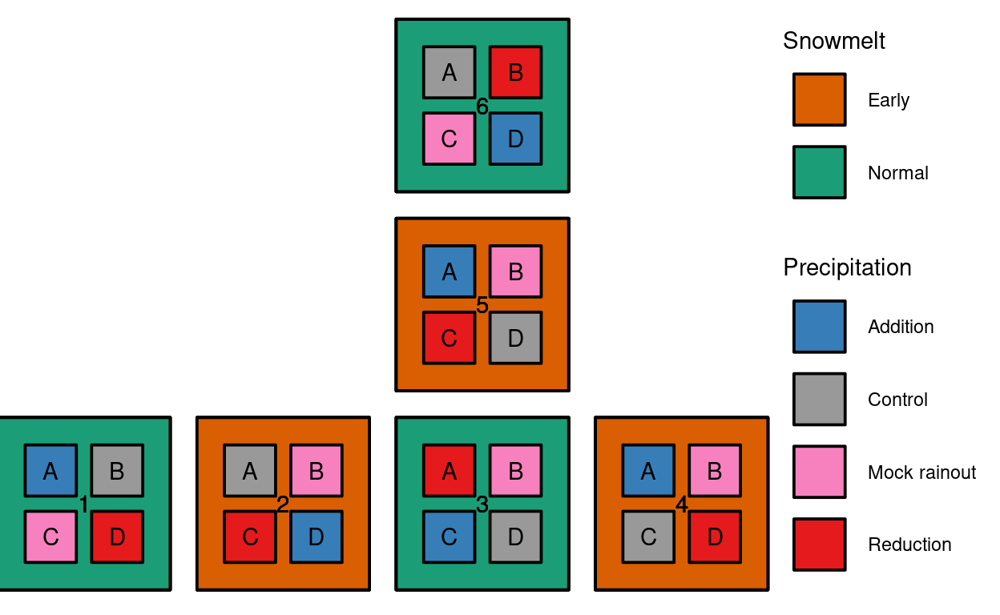
Snow melt vs. treatments
ggplot(hobo, aes(x=intensity, y=temp, color=hour(time))) + geom_point(alpha=0.5, size=0.5) + geom_density_2d(color="black")+
scale_x_log10(labels=function(x) format(x, scientific=F, big.mark=","), limits=c(10,1e6), breaks=10^(0:6)) +
scale_color_gradientn(colours = rainbow(5))+
geom_vline(xintercept = melt_threshold_sun) +
geom_hline(yintercept=melt_threshold_warm)+ geom_hline(yintercept=-melt_threshold_warm) +
labs(x="Light intensity (lux)", y="Temperature (C)", color="Hour") +
theme_dark() + theme(panel.grid.minor.x=element_blank())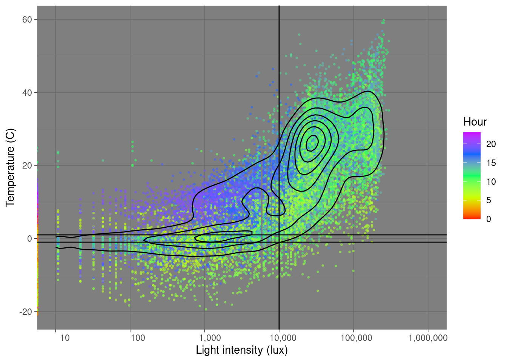
ggplot(hobo %>% filter(hour(time)%in%5:17 &
(year!="2019"&yday(time) %in% 110:130 |
year=="2019"&yday(time) %in% 145:160)),
aes(x=intensity, y=temp, color=hour(time))) + geom_point(alpha=0.7) +geom_density_2d(color="black")+
scale_x_log10(labels=function(x) format(x, scientific=F, big.mark=","), limits=c(10,1e6), breaks=10^(0:6)) +
scale_color_gradientn(colours = rainbow(5))+
geom_vline(xintercept = melt_threshold_sun) +
geom_hline(yintercept=melt_threshold_warm)+ geom_hline(yintercept=-melt_threshold_warm) +
labs(title="Temperature and light thresholds for snow melt", subtitle = "During the day during melt weeks",
x="Light intensity (lux)", y="Temperature (C)", color="Hour") +
theme_dark() + theme(panel.grid.minor.x=element_blank())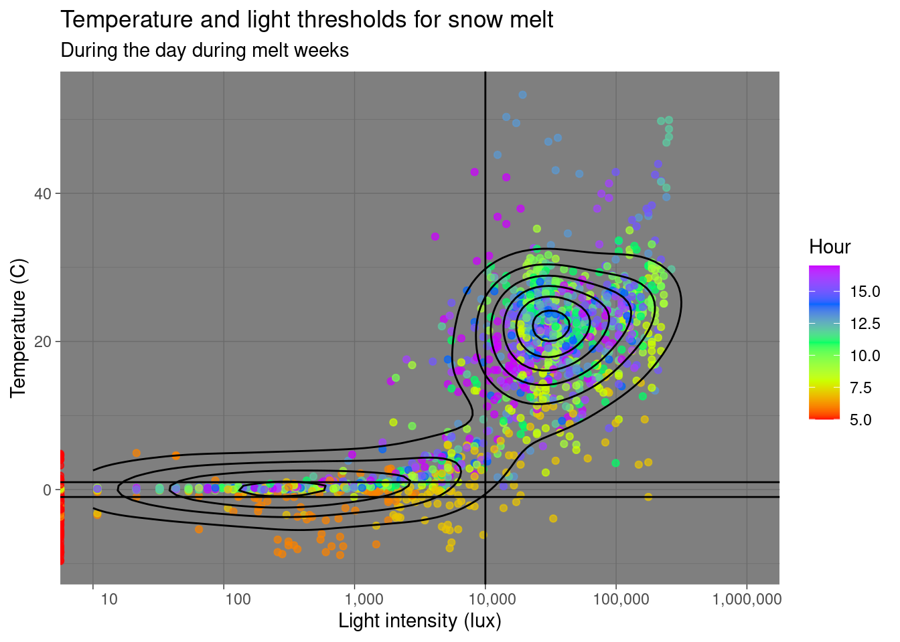
ggplot(hobo %>% filter(month(time)%in%4:6), aes(x=time, y=temp, color=plot)) +
facet_wrap(vars(year), scales="free_x", ncol=1) +
geom_hline(yintercept=melt_threshold_warm) + geom_hline(yintercept=-melt_threshold_warm) +geom_line() +
geom_segment(data=meltdates, aes(x=warm_time, y=-10, xend=sun_time, yend=-15, color=plot), size=1) +
geom_line(data=daily_CORBIL %>% filter(year!="2017", month(date)%in%4:6), aes(x=as.POSIXct(date), y=av_temp_2m_C), inherit.aes = F, color=brewer.pal(3, "Oranges")[3]) +
labs(x="Date",y="Temperature (C)", color="Plot")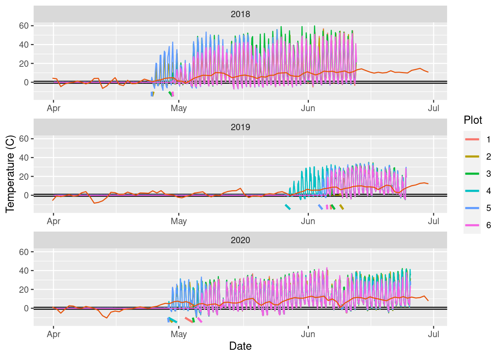
ggplot(hobo %>% filter(month(time)%in%4:6), aes(x=time, y=intensity, color=plot)) +
facet_wrap(vars(year), scales="free_x", ncol=1) +
geom_line() + geom_hline(yintercept=melt_threshold_sun) +
geom_point(data=meltdates, aes(x=sun_time, y=-2e4, color=plot), size=1) +
labs(x="Date",y="Light intensity (lux)", color="Plot")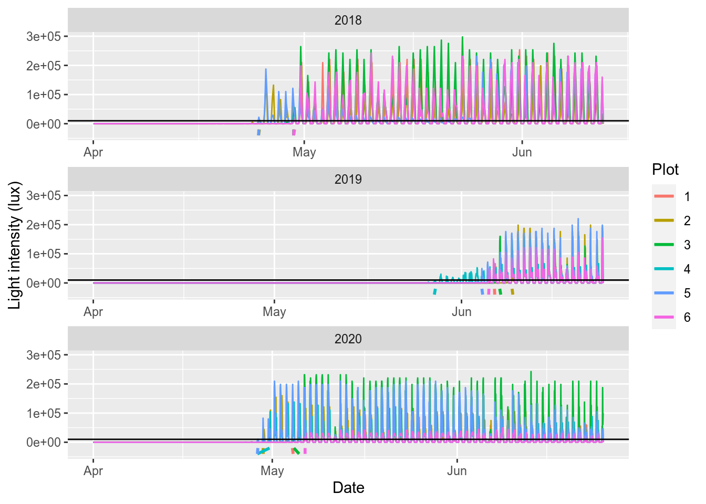
meltdates %>% select(c("year","plot", "snow", ends_with("date"))) %>% pivot_longer(ends_with("date")) %>% arrange(name) %>%
ggplot(aes(y=name, x=value, color=plot, group=plot, linetype=snow)) + facet_wrap(vars(year), ncol=1) +
geom_path(size=1) + #geom_text(aes(label=plot), hjust=1.5) +
scale_linetype_manual(values=c(4,1)) + scale_x_continuous(minor_breaks=110:160)+
labs(x="Day of year",y="Criteron", color="Plot", linetype="Snowmelt")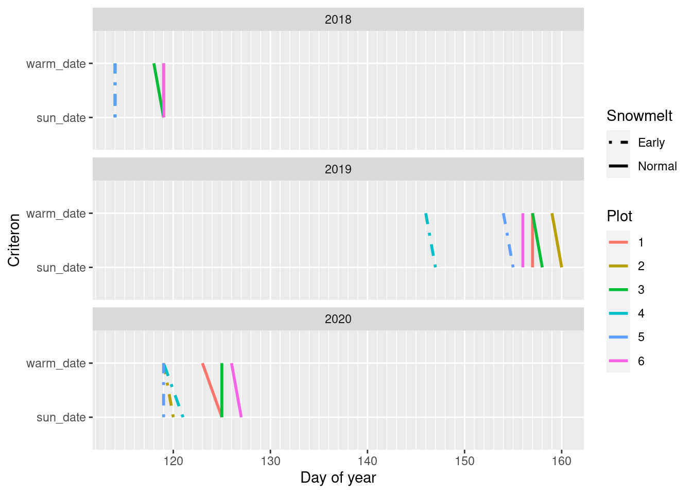
meltdates %>% ggplot(aes(x=melt_offset, fill=snow)) + geom_dotplot(method="histodot", binwidth=1, color="white") +
facet_wrap(vars(year), ncol=1)+ scale_fill_manual(values=snow_pal) +
scale_y_continuous(expand=expansion(0,0))+ scale_x_continuous(breaks=-10:4)+
theme(panel.grid.minor = element_blank()) +
labs(x="Offset from mean normal snow melt date (days)", y="Number of plots", fill="Snowmelt")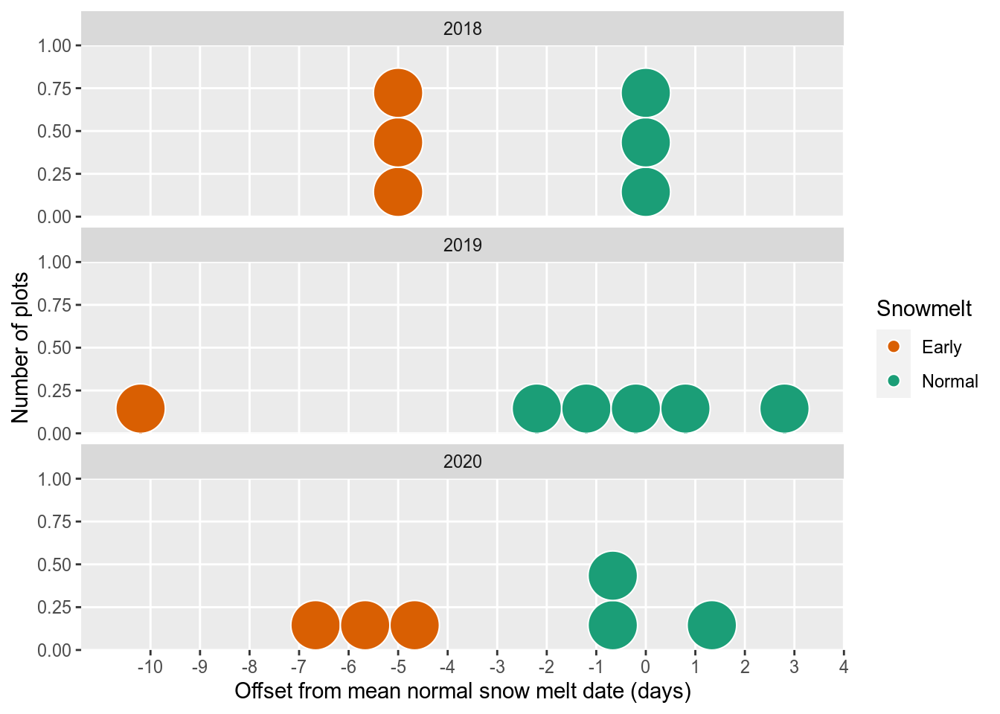
Weather data
Daily weather
ggplot(daily_all %>% filter(year(date) %in% 2018:2020), aes(y=EPA_NOAA_filled, x=yday(date))) + geom_col(aes(fill=ground_covered)) +
facet_wrap(vars(year(date)), ncol=1) + labs(x="Day of year", y="NOAA_billy precipiation (mm)", fill="Snow cover")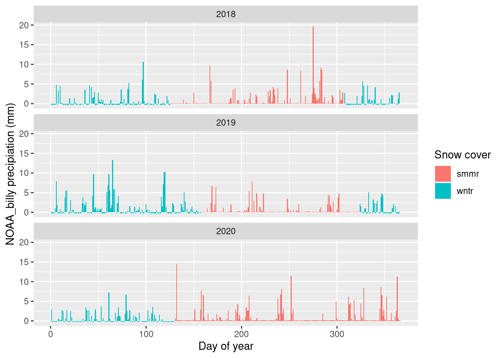
daily_all %>% pivot_longer(unname(stations), names_to="station", values_to="precipitation_mm") %>%
filter(yday(date) >100, yday(date) < 240, year(date) %in% 2018:2020) %>%
ggplot(aes(x=yday(date), y=precipitation_mm, color=station, shape=ground_covered)) +
geom_line() + geom_point() + facet_wrap(vars(year), ncol=1) + theme(legend.position = "top", legend.direction="vertical") +
labs(x="Day of year", y = "Precipitation (mm)", color="Station", shape="Snow cover")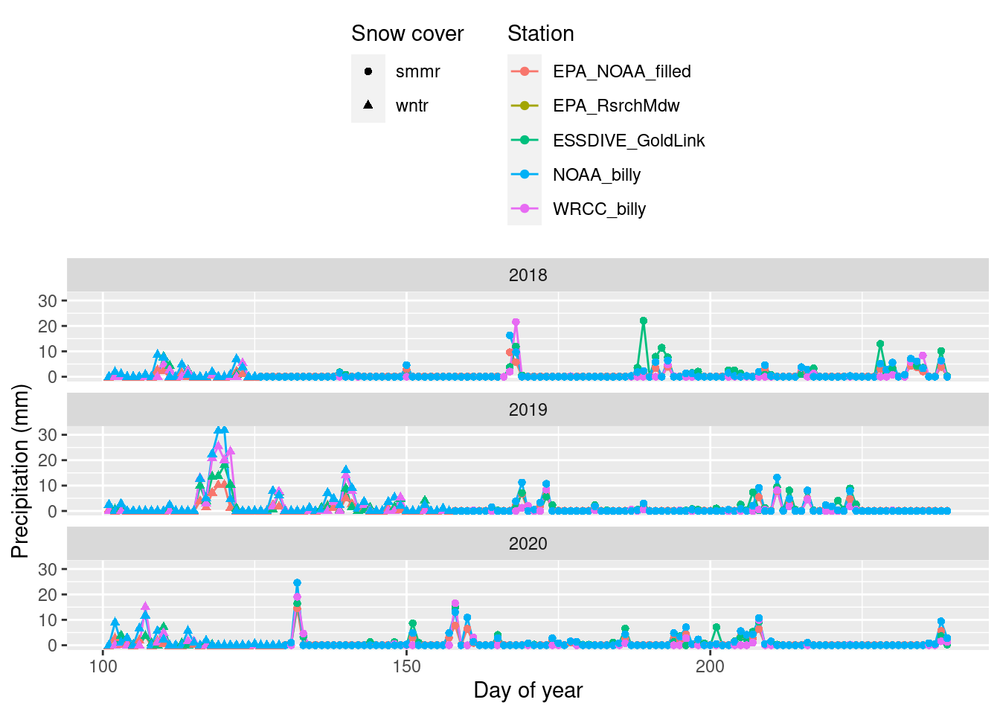
precip_max <- 50
lower_continuous <- function (data, mapping, ...) {
ggally_smooth(data = data, mapping = mapping, ..., method = "loess") + scale_shape_manual(values=c(1,2))+
coord_cartesian(xlim=c(0,precip_max), ylim=c(0,precip_max)) + geom_abline(slope=1, intercept=0)+
scale_x_continuous(breaks=seq(0,precip_max, by=precip_max/5))+scale_y_continuous(breaks=seq(0,precip_max, by=precip_max/5))
}
lower_combo <- function (data, mapping, ...) {
ggally_facethist(data = data, mapping = mapping, binwidth=precip_max/50,...) +
coord_cartesian(xlim=c(0,precip_max)) + scale_x_continuous(breaks=seq(0,precip_max, by=precip_max/5))
}
ggpairs(daily_all %>% select(all_of(unname(stations[-1])), ground_covered), mapping=aes(color=ground_covered,shape=ground_covered), lower=list(continuous=wrap(lower_continuous), combo=wrap(lower_combo)))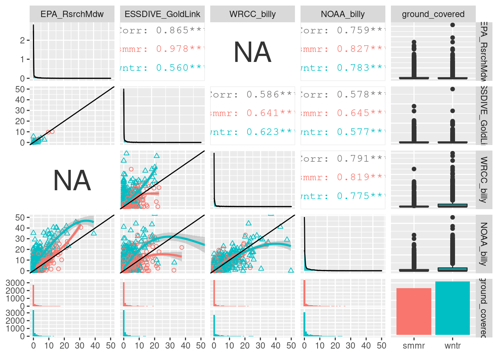
filter(daily_all) %>% ggplot(aes(y=EPA_RsrchMdw,x= NOAA_billy, color=ground_covered)) + geom_point(shape=1) + geom_smooth(method="lm", se=F) + geom_abline(intercept=0, slope=1) + labs(color="Snow cover")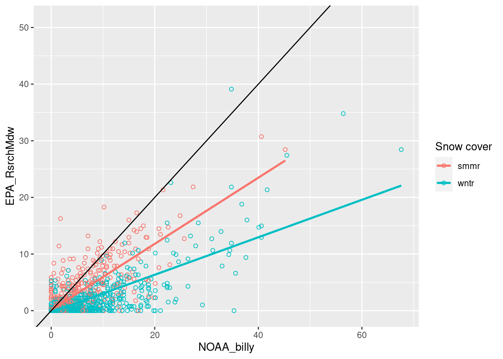
Monthly weather
#recalculate Campbell and Wendlandt 2013 July average, 1989 - 2006 EPA station
(EPA_89_06_July_avg_mm <- monthly_all %>% filter(mo==7, yr >= 1989, yr <= 2006) %>% pull(EPA_NOAA_filled) %>% mean)[1] 53.70822(water_addition_per_month_mm <- (14 / 4 / 2) * 31) #14 L applied to 4 m2 every 2 days = 1.75 mm daily precip * 31 days in July[1] 54.25monthly_all %>% pivot_longer(unname(stations), names_to="station", values_to="precipitation_mm") %>%
ggplot(aes(x=mo*30.4-15.2, y=precipitation_mm, color=station)) + facet_wrap(vars(yr)) + #place points at month midpoint
geom_rect(data=waterdates %>% pivot_wider(names_from=precip_treatments, values_from=c(day, date)) %>% mutate(yr=factor(year)),
aes(xmin=day_started, xmax=day_ended, ymin=0, ymax=water_addition_per_month_mm), inherit.aes=F,
fill=water_pal["Addition"])+
geom_line() + geom_point()+
geom_point(data=groundcover %>% filter(year>=2004) %>% mutate(yr=factor(year)), aes(x=first_0_cm_day,y=0), inherit.aes=F)+
geom_point(data=groundcover %>% filter(year>=2005) %>% mutate(yr=factor(year-1)), aes(x=first_snow_day,y=0), inherit.aes=F)+
labs(y="Monthly precipitation (mm)", x="Day of the year, with snowmelt and first snow dates", color="Station") +
theme(legend.position="top") + coord_cartesian(ylim=c(0,200))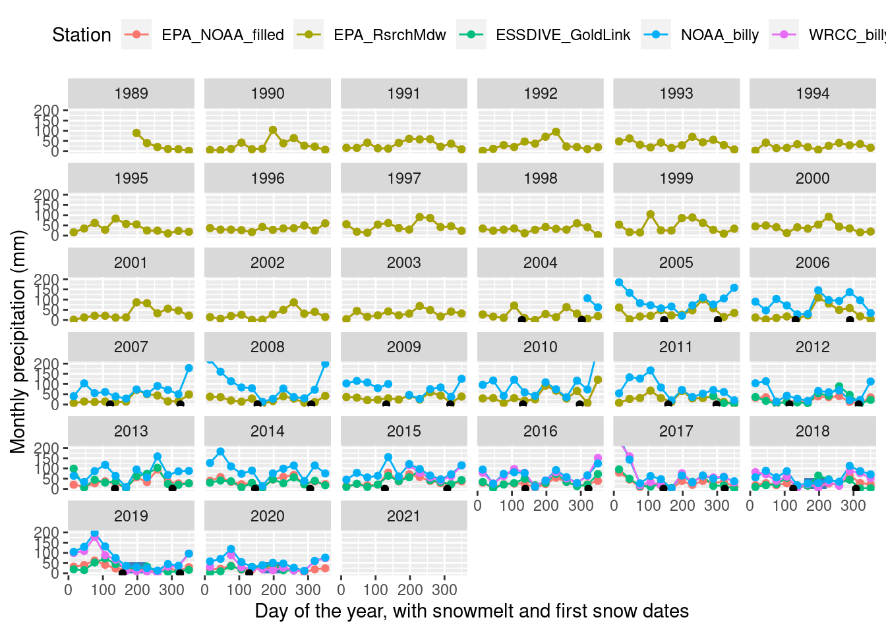
precip_max <- 250
ggpairs(monthly_all %>% mutate(season=factor(c("wntr","smmr"))[1+mo %in% 6:9]) %>% select(all_of(unname(stations[-1])), season), mapping=aes(color=season,shape=season), lower=list(continuous=wrap(lower_continuous), combo=wrap(lower_combo)))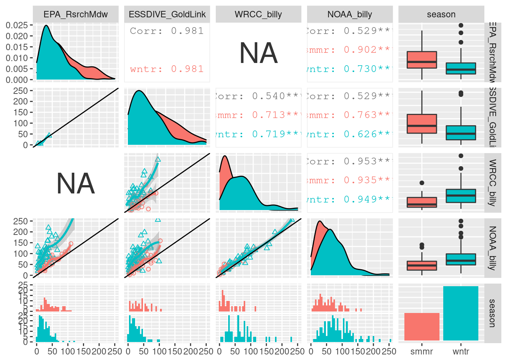
filter(monthly_all) %>% ggplot(aes(y=EPA_RsrchMdw,x= NOAA_billy, color=ifelse(mo %in% 6:9,mo,"Oct - May"))) + geom_point() + geom_smooth(method="lm", se=F) + geom_abline(intercept=0, slope=1) + labs(color="Month")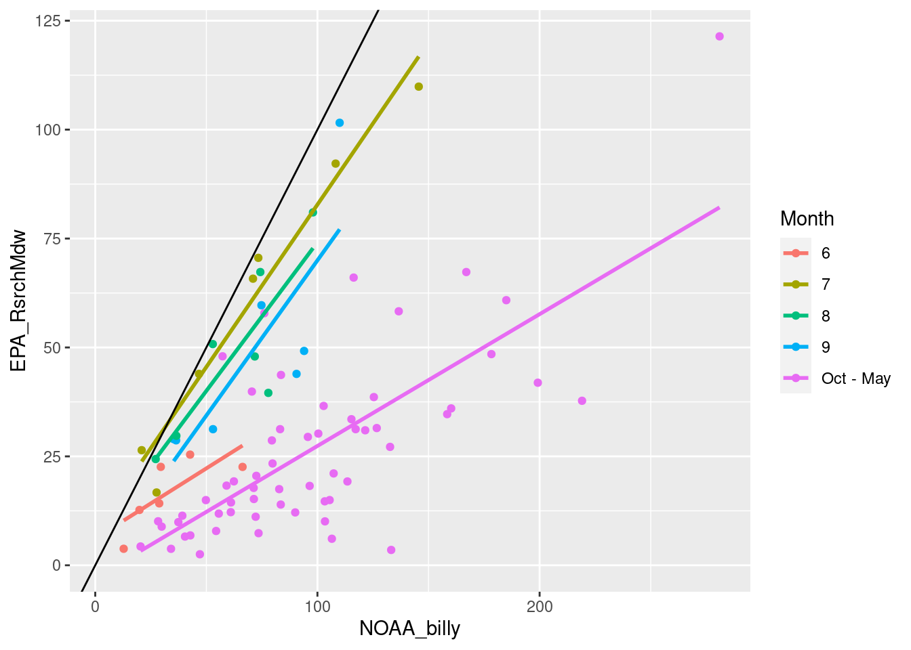
monthly_all %>% filter(mo %in% 5:9) %>%
ggplot(aes(x=mo, y=EPA_NOAA_filled)) + geom_smooth(span=0.5, color="black") +
geom_line(aes(color=ifelse(yr>=2018, "study period (filled)", ifelse(yr>=2012,"filled from billy's NOAA data","original EPA data")), group=yr)) +
geom_point(x=7, y=EPA_89_06_July_avg_mm)+ scale_y_continuous(limits=c(0,100))+
geom_text(aes(label=ifelse(yr>=2018, yr, ""))) +
labs(y="Monthly precipitation (mm)", x="Month", title="EPA Research Meadow 1989-2020 summer precipitation",
subtitle="Black dot is mean July precipitation 1989-2006", color="Data filling") + theme(legend.position = "top")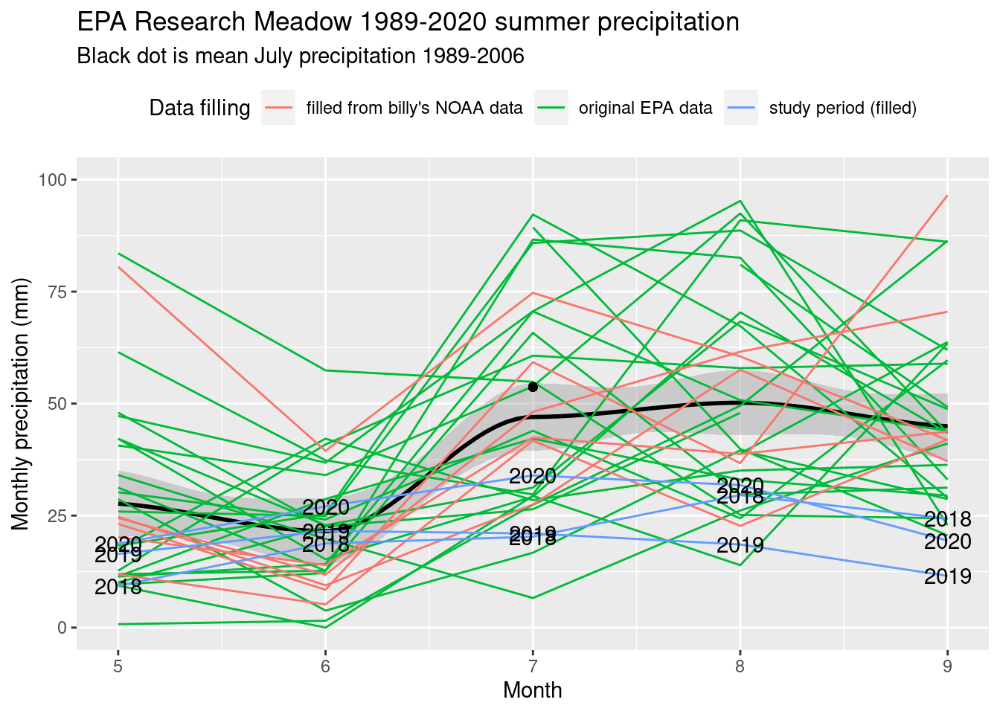
monthly_all %>% filter(mo %in% 5:9) %>% ggplot(aes(x=yr, color=factor(mo), group=mo, shape=ifelse(yr>=2018, "study period (filled)", ifelse(yr>=2012,"filled from billy's NOAA data","original EPA data")), y=EPA_NOAA_filled)) +
geom_vline(xintercept=2011.5) +geom_point() + geom_smooth(se=F, span=0.7) +
scale_shape_manual(values=c(1,2,19)) + scale_y_continuous(limits=c(0,100))+
labs(x="Year",y="EPA Research Meadow monthly precipitation (mm)", color="Month", shape="Data filling") +
geom_segment(data=monthly_all %>% filter(mo %in% 5:9, yr <= 2007) %>%
group_by(mo) %>% summarize(mean_precip=mean(EPA_NOAA_filled)),
aes(x=1989, xend=2006, y=mean_precip, yend=mean_precip, color=factor(mo)), inherit.aes=F, size=1) 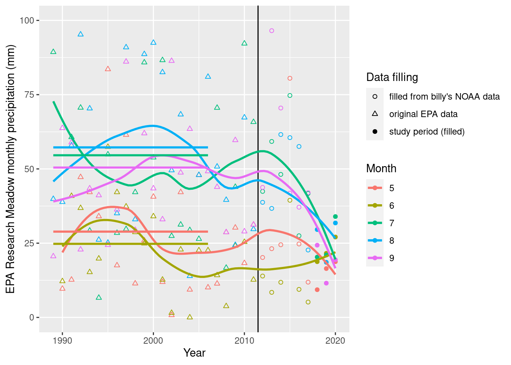
Snowmelt timing
groundcover %>% mutate(first_snow_day=first_snow_day-365) %>%
pivot_longer(ends_with("day"), names_to="threshold", values_to="day") %>% drop_na(day) %>% select(-starts_with("first")) %>%
mutate(threshold = fct_reorder(factor(threshold),day, na.rm=T, .desc=T)) %>%
ggplot(aes(x=year, y=day, color=threshold)) +
annotate("rect", xmin=2017.5, xmax=2020.5, ymin=-Inf, ymax=Inf, fill="lightblue")+
geom_line(aes(group=year), size=2)+ geom_smooth( method="lm", se=F) +geom_point() +
scale_x_continuous(minor_breaks = 1976:2020, position = "top") + scale_y_continuous(n.breaks=10)+
scale_color_grey(labels=function(x) str_to_sentence(str_replace_all(x, "_", " ")), start=0, end=0.85) +
labs(x="Year", y="Day of year", color="Threshold") + theme_minimal()
cat("SD of first bare ground =", round(sd(groundcover$first_0_cm_day),1),"days over",range(groundcover$year))SD of first bare ground = 13.5 days over 1976 2020summary(lm(first_0_cm_day ~ year, data=groundcover))
Call:
lm(formula = first_0_cm_day ~ year, data = groundcover)
Residuals:
Min 1Q Median 3Q Max
-28.0159 -9.0654 0.3778 8.4025 29.7501
Coefficients:
Estimate Std. Error t value Pr(>|t|)
(Intercept) 557.6491 305.4670 1.826 0.0749 .
year -0.2092 0.1529 -1.369 0.1783
---
Signif. codes: 0 '***' 0.001 '**' 0.01 '*' 0.05 '.' 0.1 ' ' 1
Residual standard error: 13.32 on 43 degrees of freedom
Multiple R-squared: 0.04174, Adjusted R-squared: 0.01945
F-statistic: 1.873 on 1 and 43 DF, p-value: 0.1783treatments %>% ggplot(aes(x=sun_date, shape=year, color=water, y=precip_est_mm))+geom_count()+
geom_point(data=groundcover, aes(x=first_0_cm_day, color="Control", shape="1990-2017"), fill="white") +
scale_color_manual(values=water_pal) + scale_shape_manual(values=c(21, 19, 17, 15))+ coord_cartesian(ylim=c(0,NA))+
labs(y="Estimated summer precipiation with treatments (mm)", x="Snowmelt date", color="Precipitation", shape="Year",size="# Plots") +
theme_minimal()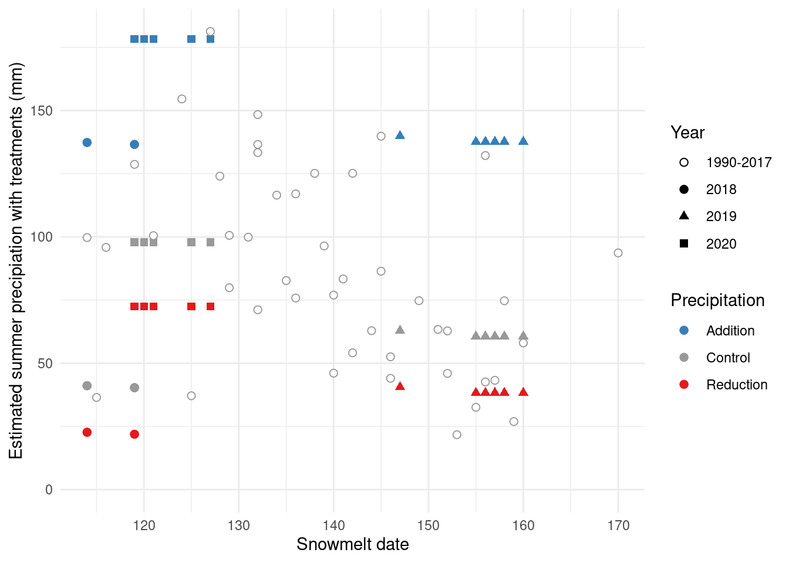
Soil moisture vs. treatments
Weather plots
ggplot(sm, aes(x=yday(date))) +
facet_wrap(vars(year), ncol=1) +
geom_jitter(aes(shape=snow, color=water, y = VWC), height=0, width=0.3) +
geom_smooth(aes(linetype=snow, color=water, y = VWC), se=F, span=0.5) +
geom_col(data=daily_all %>% filter(yr%in%2018:2020), aes(x=yday(date), y=EPA_NOAA_filled),
fill=brewer.pal(3, "Greens")[3]) +
geom_line(data=daily_all %>% filter(yr%in%2018:2020), aes(x=yday(date), y=av_temp_2m_C),
color=brewer.pal(3, "Oranges")[3]) +
geom_vline(data=meltdates, aes(xintercept=sun_date, linetype=snow), color=brewer.pal(3, "Purples")[3])+
geom_line(data = snowcloth, aes(y=mean_snow_depth_cm/10, group=year))+
geom_point(data = snowcloth, aes(y=mean_snow_depth_cm/10))+
geom_line(data=groundcover %>% pivot_longer(ends_with("day"), names_to="threshold", values_to="day") %>%
filter(threshold!="first_snow_day", year>2017) %>%
mutate(snow_depth_cm = as.integer(str_split_fixed(threshold,"_",n=4)[,2])),
aes(x=day, y=snow_depth_cm/10), color="grey40")+
geom_segment(data=waterdates %>% pivot_wider(names_from=precip_treatments, values_from=c(day,date)),
aes(x=day_started, xend=day_ended, y=20, yend=20)) +
geom_point(data=waterdates, aes(x=day,y=20)) +
geom_point(data=ph, aes(y= 17*(open+buds)/(open+buds)), color="grey", shape=0)+
geom_point(data=mt, aes(y= 18*corolla_length/corolla_length), color="purple", shape=0)+
geom_point(data=mt, aes(y= 19*nectar_24_h_ul/nectar_24_h_ul), color="orange", shape=0)+
scale_x_continuous(limits=c(85, 230), breaks=scales::breaks_extended(10), expand=expansion(0,0)) + scale_y_continuous(limits=c(-3, 20)) +
labs(y="Soil VWC (%) / Daily precipitation (mm) / Mean temp. (C) / Snowpack (dm)",
x="Day of year", color="Precipitation", shape="Snow", linetype="Snow") +
scale_color_manual(values=water_pal) +
scale_linetype_manual(values=c(2,1)) + theme_minimal() +
theme(legend.key.size = unit(2, "lines"))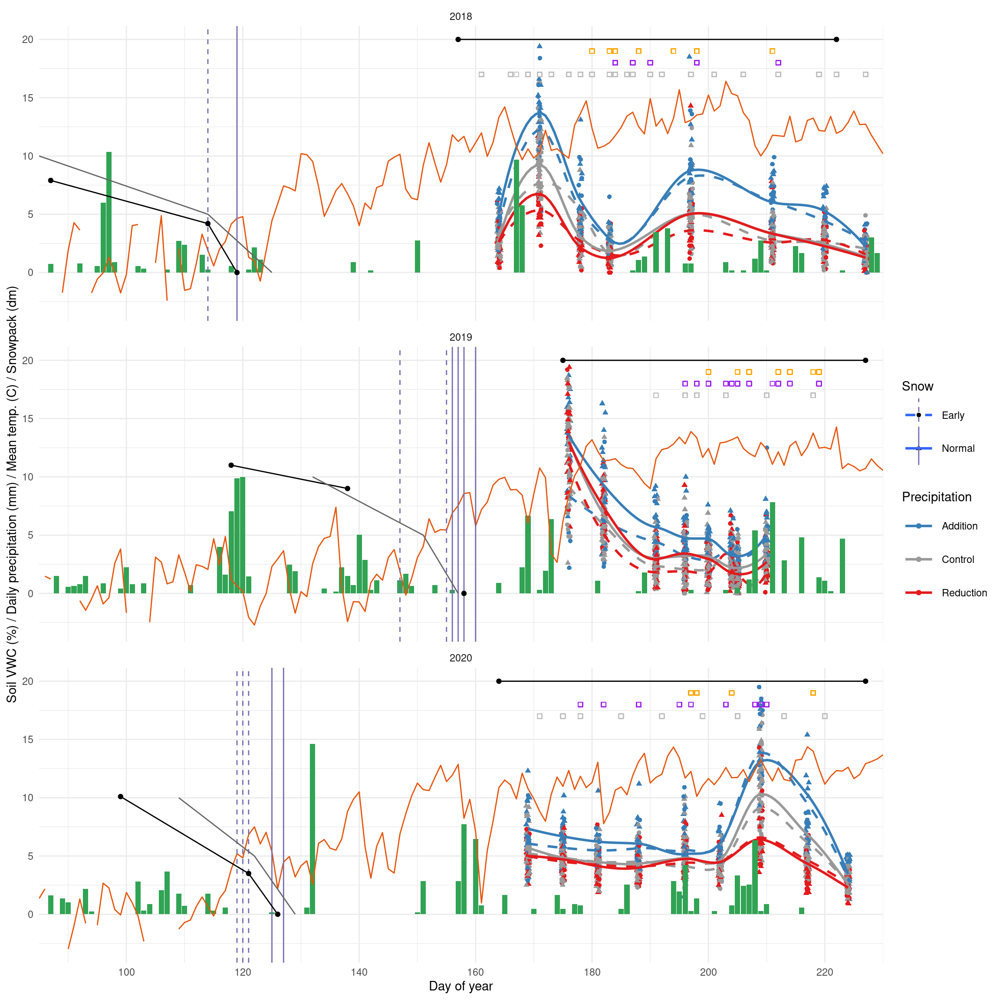
ggplot(sm.subplot, aes(x=yday(date))) +
facet_wrap(vars(year), ncol=1) +
geom_col(data=daily_all %>% filter(yr%in%2018:2020), aes(x=yday(date), y=EPA_NOAA_filled),
fill=brewer.pal(3, "Greens")[2]) +
geom_line(data=daily_precip_est, aes(y=VWC_Control_4*100), color=brewer.pal(3, "Greens")[2], size=1) +
geom_point(aes(shape=snow, color=water, y = VWC)) +
geom_line(data=sm.subplot %>% group_by(water, snow, year, date) %>% summarize(VWC=mean(VWC, na.rm=T)), aes(linetype=snow, color=water, y = VWC)) +
scale_color_manual(values=water_pal) + scale_linetype_manual(values=c(2,1)) +
geom_vline(data=meltdates, aes(xintercept=sun_date, linetype=snow), color="black", show.legend=F) +
coord_cartesian(xlim=c(110, 230), ylim=c(0, round(max(sm.subplot$VWC, na.rm=T))), expand=F)+
labs(x="Day of year", y="Mean soil VWC in subplot (%) / Precipitation (mm)", color="Water", shape="Snowmelt", linetype="Snowmelt") + theme_minimal() + theme(legend.key.width = unit(2, "lines"))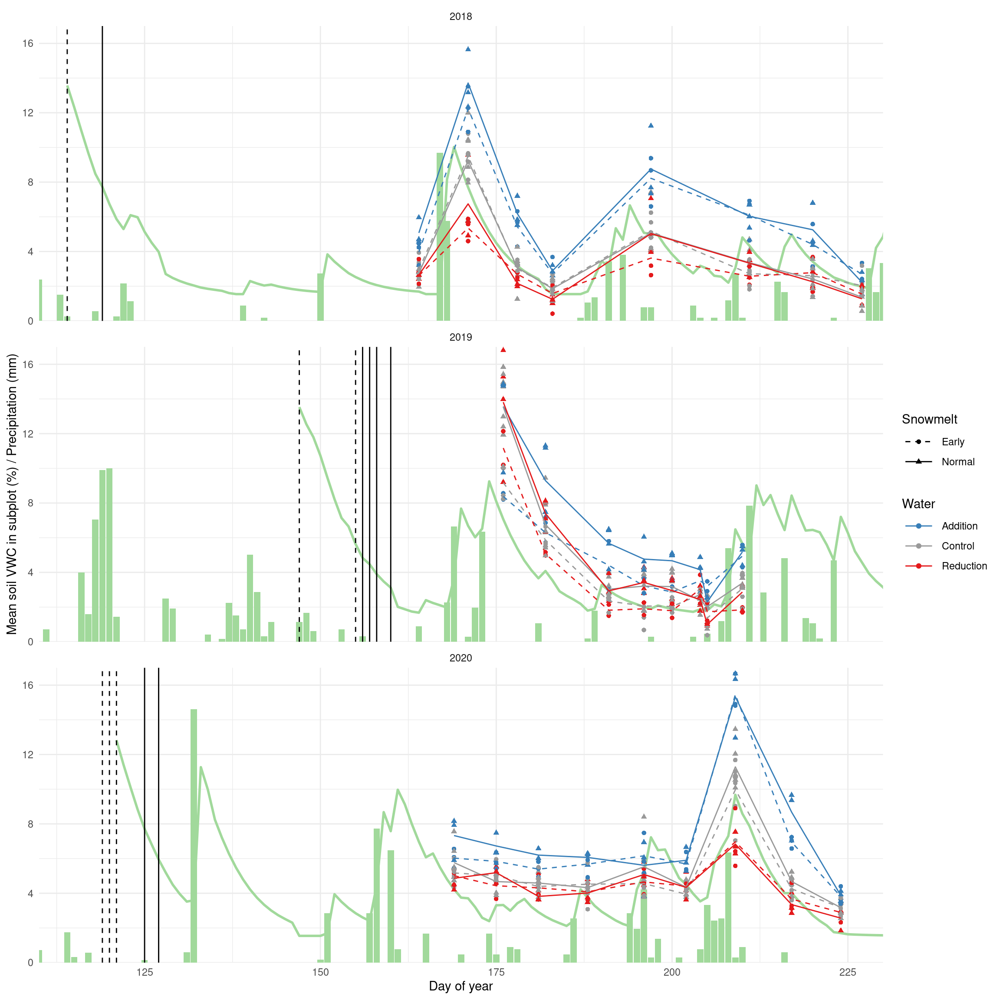
Soil moisture vs. snowmelt date
left_join(filter(sm.subplot20d, mo20d!="221 - 240"), meltdates) %>%
mutate(mo = paste0("Days ",mo20d)) %>%
ggplot(aes(x=sun_date, y=VWC, shape=year,color=water)) +
facet_wrap(vars(mo), nrow=1)+
geom_point() + geom_smooth(se=F, method="lm") +
scale_color_manual(values=water_pal) +
labs(x="Snowmelt date", y="Mean soil moisture in subplot", color="Water", shape="Year")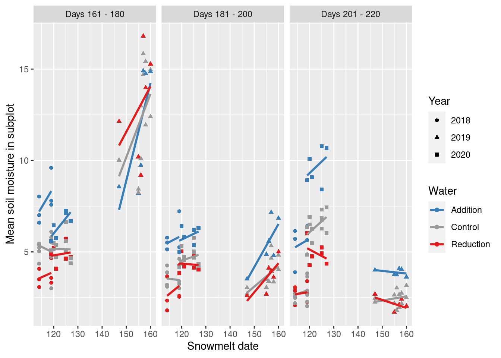
sm.subplot %>% mutate(day=yday(date)) %>% group_by(year) %>% summarize(start=min(day), end=max(day)) %>% kable(caption = "Soil moisture collection dates")| year | start | end |
|---|---|---|
| 2018 | 164 | 227 |
| 2019 | 176 | 210 |
| 2020 | 169 | 224 |
# VWC split-plot analysis
sm.mod <- lmer(VWC ~ year * snow * water + (1|plot), data=sm.subplotyear)
anova(sm.mod) %>% kable(digits=3)| Sum Sq | Mean Sq | NumDF | DenDF | F value | Pr(>F) | |
|---|---|---|---|---|---|---|
| year | 21.070 | 10.535 | 2 | 51.178 | 50.111 | 0.000 |
| snow | 2.153 | 2.153 | 1 | 15.960 | 10.241 | 0.006 |
| water | 53.088 | 26.544 | 2 | 49.541 | 126.259 | 0.000 |
| year:snow | 2.240 | 1.120 | 2 | 50.597 | 5.328 | 0.008 |
| year:water | 4.477 | 1.119 | 4 | 49.541 | 5.324 | 0.001 |
| snow:water | 0.608 | 0.304 | 2 | 49.541 | 1.446 | 0.245 |
| year:snow:water | 0.349 | 0.087 | 4 | 49.541 | 0.415 | 0.797 |
(sm.emm.snow <- as.data.frame(emmeans(sm.mod, ~ snow))) %>% kable(digits=3)| snow | emmean | SE | df | lower.CL | upper.CL |
|---|---|---|---|---|---|
| Early | 4.433 | 0.191 | 7.004 | 3.980 | 4.885 |
| Normal | 5.124 | 0.174 | 6.157 | 4.701 | 5.547 |
sm.emm.snow$emmean[1] - sm.emm.snow$emmean[2][1] -0.6912101(sm.emm.water <- as.data.frame(emmeans(sm.mod, ~ water))) %>% kable(digits=3)| water | emmean | SE | df | lower.CL | upper.CL |
|---|---|---|---|---|---|
| Addition | 6.146 | 0.166 | 9.344 | 5.772 | 6.519 |
| Control | 4.352 | 0.147 | 5.765 | 3.990 | 4.715 |
| Reduction | 3.837 | 0.166 | 9.344 | 3.463 | 4.211 |
sm.emm.water$emmean[1] - sm.emm.water$emmean[2][1] 1.793071sm.emm.water$emmean[3] - sm.emm.water$emmean[2][1] -0.5151694Timing of measurements
ggplot(timings %>% filter(variable!="sds") %>% mutate(variable=fct_reorder(variable, begin, na.rm=T, .desc=T)), aes(y=variable, color=year))+
geom_linerange(aes(xmin=begin, xmax=end),
position = position_dodge2(width=0.7, reverse = T), size=1.2, show.legend=FALSE) +
#geom_text(aes(x=begin-10, label=begin), position = position_dodge(width=0.7), fontface="bold")+
#geom_text(aes(x=end+10, label=end), position = position_dodge(width=0.7), fontface="bold") +
geom_text(data=timings %>% drop_na(plots) %>% filter(year=="2019"),
aes(x = end+7, label=paste(ifelse(nchar(plots)>1, "Plots","Plot"), str_replace(plots,","," & "))),
position = position_dodge2(width=0.8, reverse = T), size=4, hjust=0, show.legend=FALSE)+
geom_point(aes(x=begin), position = position_dodge2(width=0.7, reverse = T), shape=15, size=2)+
geom_point(aes(x=end), position = position_dodge2(width=0.7, reverse = T), shape=15, size=2) +
scale_color_manual("Year", values=year_pal, guide=guide_legend(override.aes = list(size=5))) +
scale_y_discrete("", labels=c(snowcloth="Snow cloths applied to early plots", meltdates="Mean snowmelt timing (early plots - unmanipulated plots)", waterdates="Summer precipitation treatments applied",sm="Soil moisture recorded",ph="Inflorescence height recorded", mt="Floral morphology recorded", nt="Nectar traits recorded", sds="Flower collection period"))+
scale_x_continuous("Day of year", breaks=seq(80,240, by=20)) +
theme_minimal() + theme(legend.position = "top")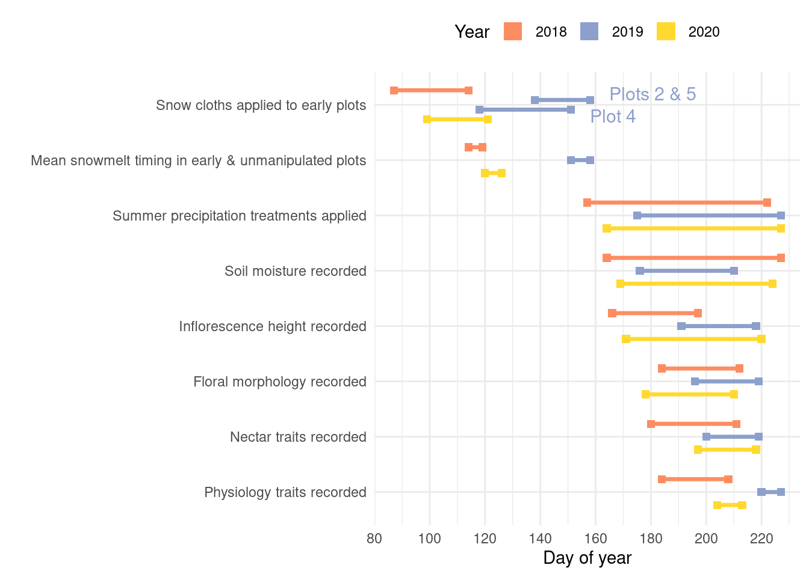
Sample sizes
cat("Morphology measurements per plant:", mt %>% drop_na(corolla_length) %>% group_by(year, plantid) %>% tally() %>% ungroup() %>% summarize(n=mean(n)) %>% pull(n) %>% round(2))Morphology measurements per plant: 2.42cat("Nectar measurements per plant:", mt %>% drop_na(nectar_24_h_ul) %>% group_by(year, plantid) %>% tally() %>% ungroup() %>% summarize(n=mean(n)) %>% pull(n) %>% round(2))Nectar measurements per plant: 1.72cat("Inflo height measurements per plant:")Inflo height measurements per plant:ph %>% drop_na(height_cm) %>% group_by(year, plantid) %>% tally() %>% summarize(n=mean(n)) %>% kable| year | n |
|---|---|
| 2018 | 3.191388 |
| 2019 | 1.662100 |
| 2020 | 3.390244 |
ph %>% drop_na(height_cm) %>% group_by(year, plantid) %>% tally() %>%
ggplot(aes(x=n, fill=year)) + geom_histogram() + labs(title = "Phenology entries per plant", x="Entries",y="Count")+
facet_wrap(vars(year), ncol=1) + scale_fill_manual(values=year_pal)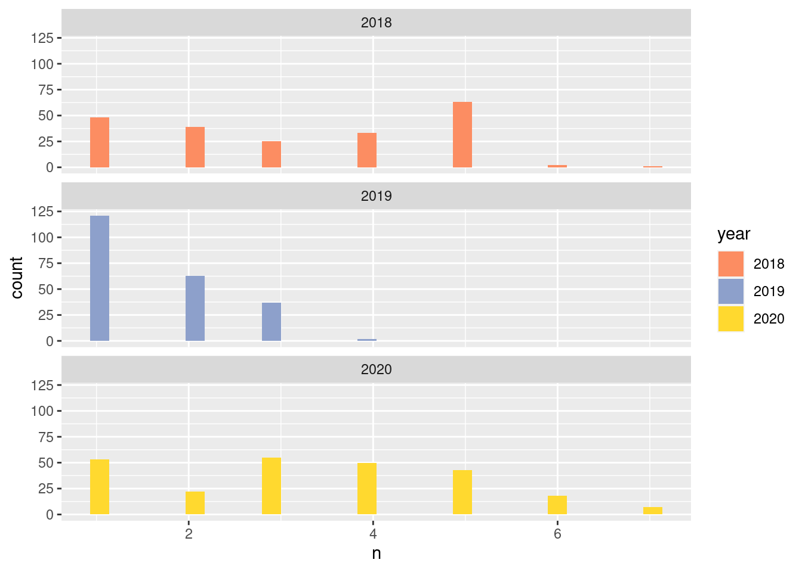
#Total sample sizes
mt %>% drop_na(corolla_length) %>% group_by(year, plantid) %>% tally() %>% ungroup %>% tally() %>% pull(n)[1] 494mt %>% drop_na(nectar_24_h_ul) %>% group_by(year, plantid) %>% tally() %>% ungroup %>% tally() %>% pull(n)[1] 432sds %>% drop_na(flowers_est) %>% group_by(year, plantid) %>% tally() %>% ungroup %>% tally() %>% pull(n)[1] 610ph %>% drop_na(height_cm) %>% group_by(year, plantid) %>% tally() %>% ungroup %>% tally() %>% pull(n)[1] 674Census
Census status
The annual census at the beginning of the summer contains information on mortality, flowering status, and plant size (longest leaf and number of leaves for each rosette).
Visualize a plant’s status in each census
ggplot(cen.size.long %>% filter(census!="2018r2"), aes(x=census, y=n_rosettes, group=plantid))+geom_path()+ geom_point() + scale_y_continuous(breaks=0:10)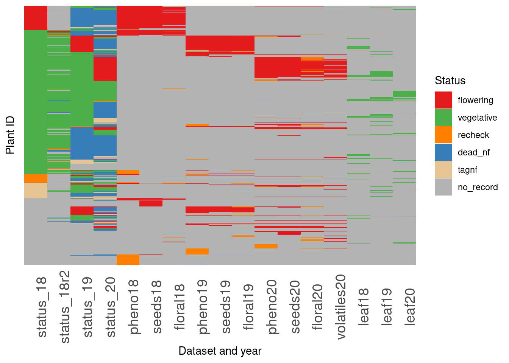
ggplot(cen.status.long, aes(y=plantid, x=census, fill=status)) + geom_tile() +
scale_fill_manual(values=brewer.pal(8, name="Set1")[c(1,3,5,2,7,6)])+
theme(axis.text.y=element_blank(), axis.ticks = element_blank()) +
labs(fill="Status", x="Census year",y="Plant ID")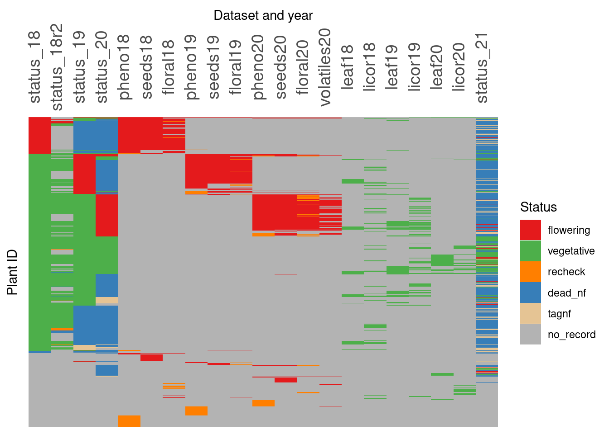
ggplot(megatally.status.long, aes(y=plantid, x=dataset, fill=status)) + geom_tile() +
scale_fill_manual(values=c(brewer.pal(5, name="Set1")[c(1,3,5,2)],brewer.pal(8, "Set2")[7:8]))+
scale_x_discrete(position="top") +
theme(axis.text.y=element_blank(), axis.ticks = element_blank(), axis.text.x = element_text(angle=90, size=14)) +
labs(fill="Status", x="Dataset and year",y="Plant ID")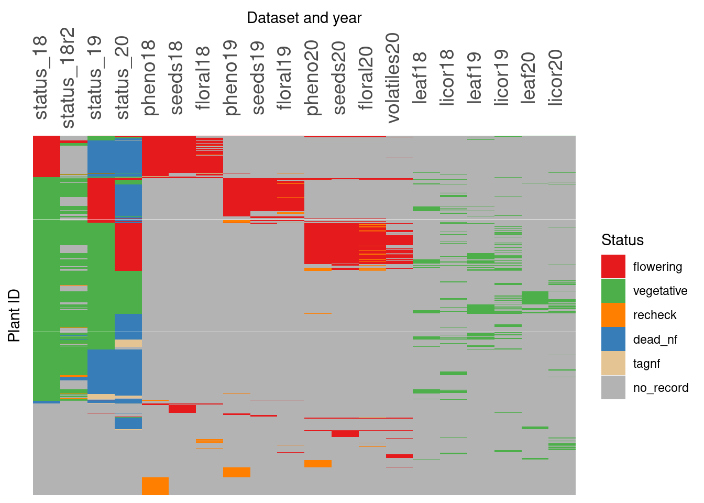
Status vs. treatment
cen.status.long %>% left_join(treatments) %>% drop_na(water, snow) %>% filter(status %in% status_ok, census !="2018r2") %>%
ggplot(aes(x=water, fill=status)) + facet_grid(snow ~ census, labeller=labeller(.cols=label_both)) + geom_bar(position="fill") +
scale_fill_manual(values=status_pal) + labs(x="Precipitation", y="Proportion", fill="Status")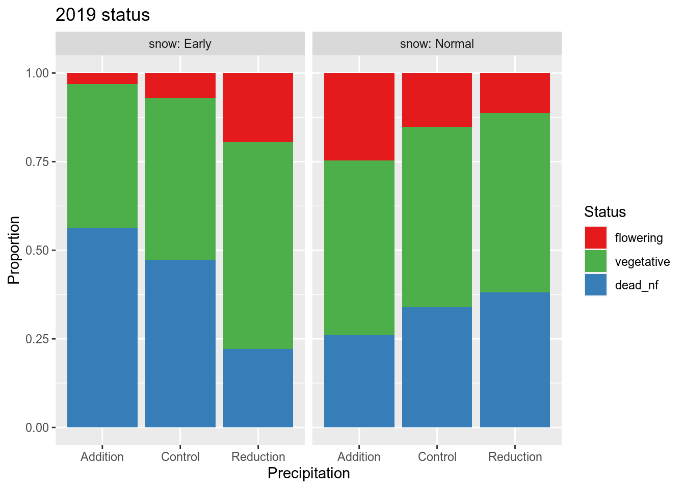
Status transitions vs. treatment
What did plants of a given status in one year look like in the next?
with(cen.status, table(`2018`=paste(status_18), `2019`=paste(status_19))) 2019
2018 dead_nf flowering no_record tagnf vegetative
dead_nf 10 0 0 2 0
flowering 151 4 0 0 22
no_record 0 3 60 0 1
vegetative 193 193 1 23 545cen.status %>% mutate(year = "2018") %>% left_join(treatments) %>% filter(status_18 %in% status_ok[-3], status_19 %in% status_ok) %>%
ggplot(aes(x=water, fill=status_19)) + facet_wrap(status_18 ~ snow, labeller=labeller(.cols=label_both)) +
labs(y="2019 Status", fill="2019 Status", x="Precipitation") +
geom_bar(position="fill") + scale_fill_manual(values=status_pal) + theme_minimal()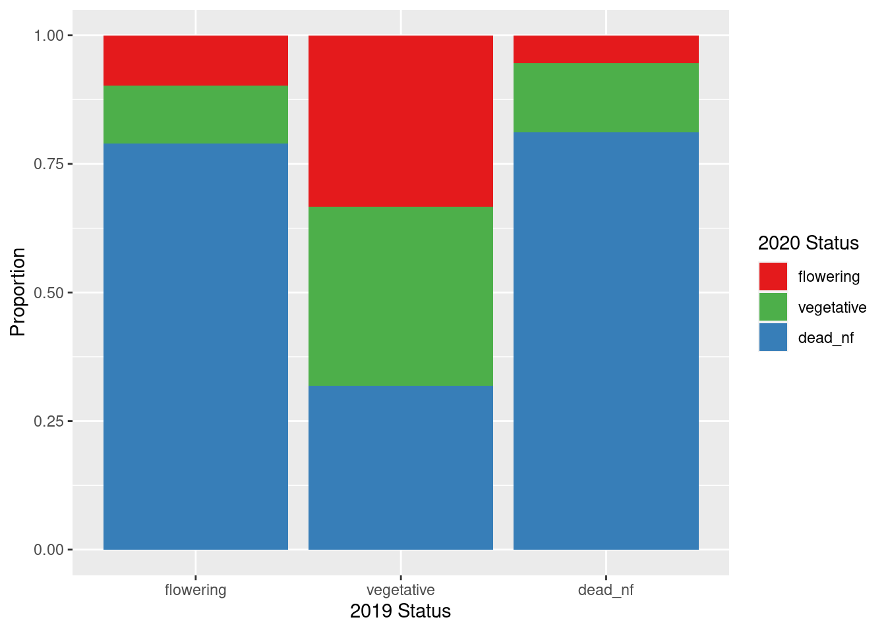
with(cen.status, table(`2019`=paste(status_19), `2020`=paste(status_20))) 2020
2019 dead_nf flowering no_record tagnf vegetative
dead_nf 352 0 0 2 0
flowering 166 14 0 0 20
no_record 53 1 0 4 3
tagnf 8 0 8 9 0
vegetative 122 207 14 34 191cen.status %>% mutate(year = "2019") %>% left_join(treatments) %>% filter(status_19 %in% status_ok[-3], status_20 %in% status_ok) %>%
ggplot(aes(x=water, fill=status_20)) + facet_wrap(status_19 ~ snow, labeller=labeller(.cols=label_both)) +
labs(y="2020 Status", fill="2020 Status", x="Precipitation") +
geom_bar(position="fill") + scale_fill_manual(values=status_pal) + theme_minimal()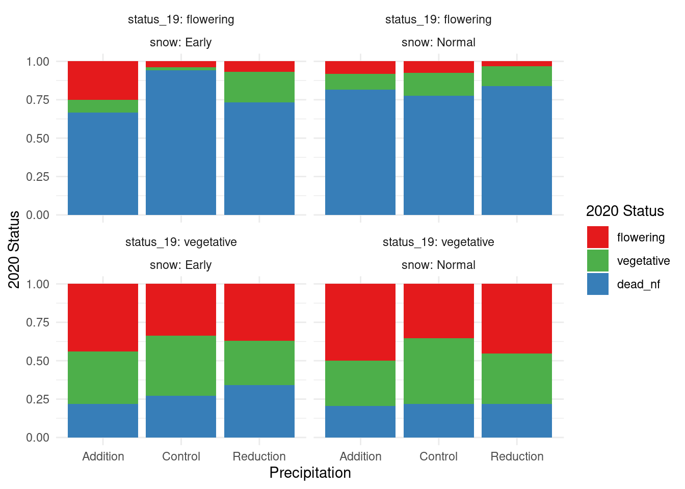
Survival and flowering vs. vegetative plant size
ggplot(filter(cen, status_19 %in% status_ok, status_18 == "vegetative"), aes(x=r1_longest_18, fill=status_19)) +
facet_wrap(vars(status_19), ncol=1) + labs(x="2018 Rosette 1 Longest Leaf (mm)", fill="2019 status") +
geom_density() + scale_fill_manual(values=status_pal) + coord_cartesian(xlim=c(0, 85))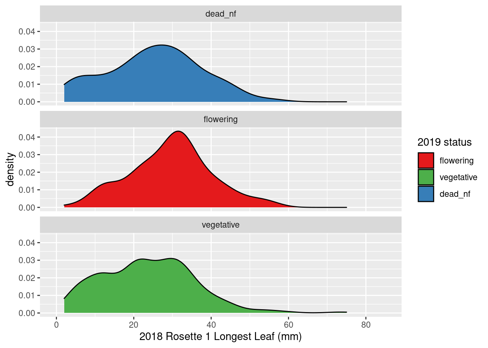
ggplot(filter(cen, status_20 %in% status_ok, status_19 == "vegetative"), aes(x=r1_longest_19, fill=status_20)) +
facet_wrap(vars(status_20), ncol=1) + labs(x="2019 Rosette 1 Longest Leaf (mm)", fill="2020 status") +
geom_density() + scale_fill_manual(values=status_pal) + coord_cartesian(xlim=c(0, 85))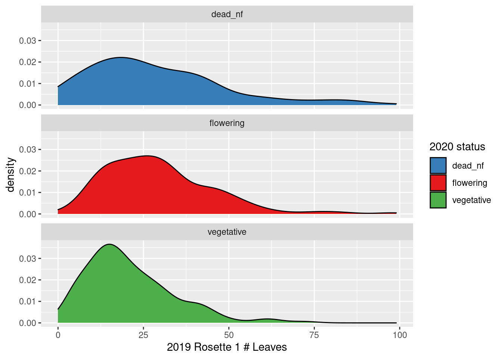
ggplot(filter(cen, status_19 %in% status_ok, status_18 == "vegetative"), aes(x=r1_leaves_18, fill=status_19)) +
facet_wrap(vars(status_19), ncol=1) + labs(x="2018 Rosette 1 # Leaves", fill="2019 status") +
geom_density() + scale_fill_manual(values=status_pal) + coord_cartesian(xlim=c(0, 100))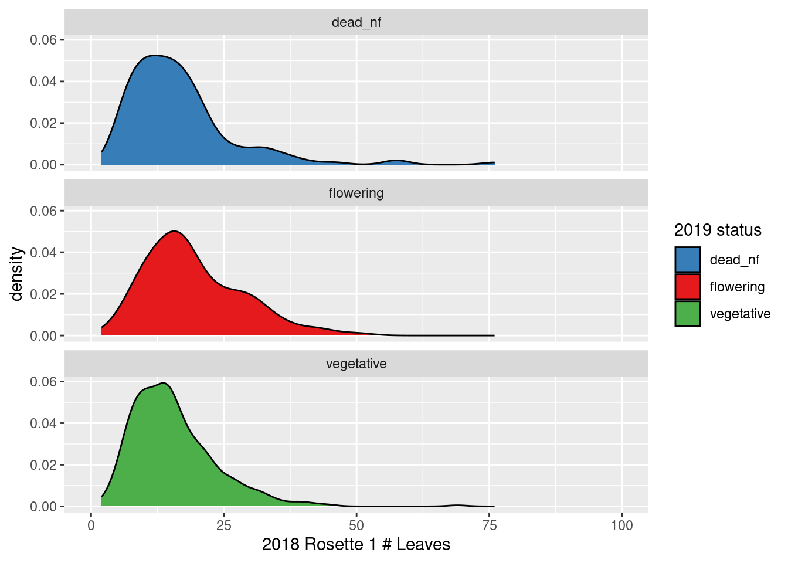
ggplot(filter(cen, status_20 %in% status_ok, status_19 == "vegetative"), aes(x=r1_leaves_19, fill=status_20)) +
facet_wrap(vars(status_20), ncol=1) + labs(x="2019 Rosette 1 # Leaves", fill="2020 status") +
geom_density() + scale_fill_manual(values=status_pal) + coord_cartesian(xlim=c(0, 100))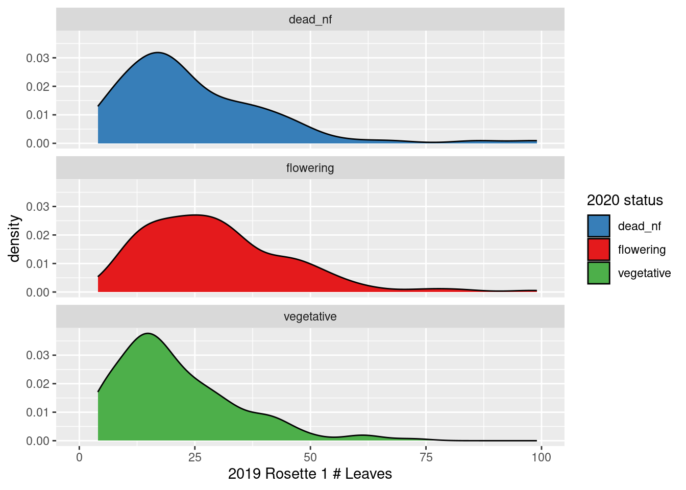
Plant growth vs. treatments
Only includes plants that remained vegetative and did not die or flower.
cen %>% drop_na(water_18, snow_18) %>% filter(status_18=="vegetative", status_19=="vegetative") %>%
ggplot(aes(x=r1_longest_18, y=r1_longest_19, color=water_18, shape=snow_18)) + geom_point() + geom_abline(intercept=0, slope=1) +
scale_color_manual(values=water_pal) + theme_minimal()+coord_fixed(xlim=c(0,80), ylim=c(0,80)) +
labs(x="2018 Rosette 1 Longest Leaf (mm)", y="2019 Rosette 1 Longest Leaf (mm)", color="Precipitation", shape="Snowmelt")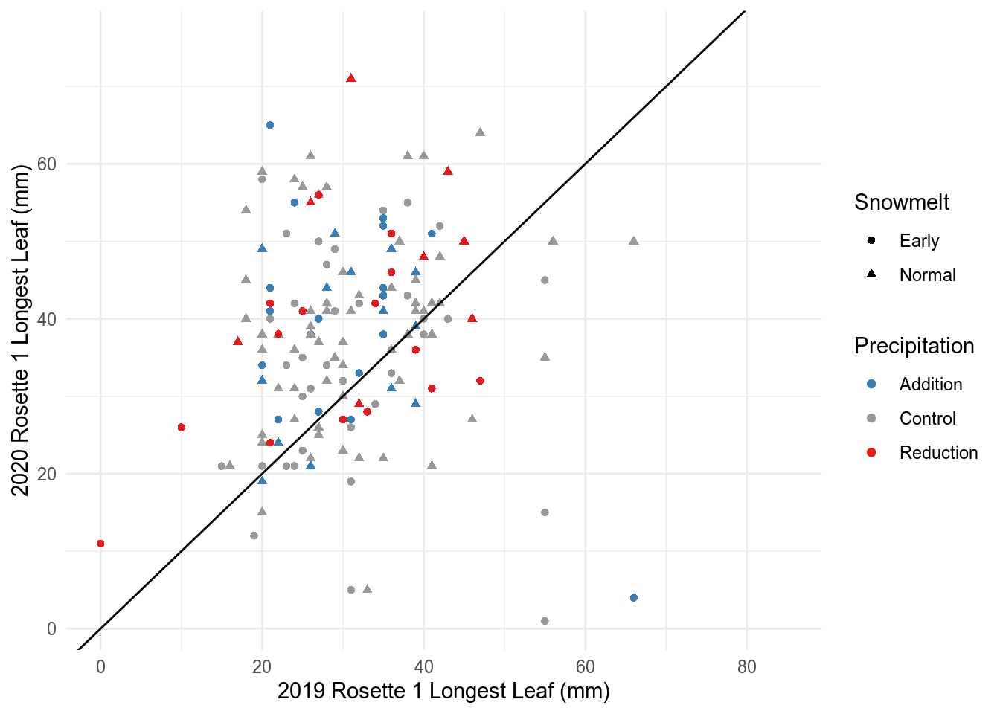
cen %>% drop_na(water_19, snow_19) %>% filter(status_19=="vegetative", status_20=="vegetative") %>%
ggplot(aes(x=r1_longest_19, y=r1_longest_20, color=water_19, shape=snow_19)) + geom_point() + geom_abline(intercept=0, slope=1) +
scale_color_manual(values=water_pal) + theme_minimal()+ coord_fixed(xlim=c(0,80), ylim=c(0,80)) +
labs(x="2019 Rosette 1 Longest Leaf (mm)", y="2020 Rosette 1 Longest Leaf (mm)", color="Precipitation", shape="Snowmelt")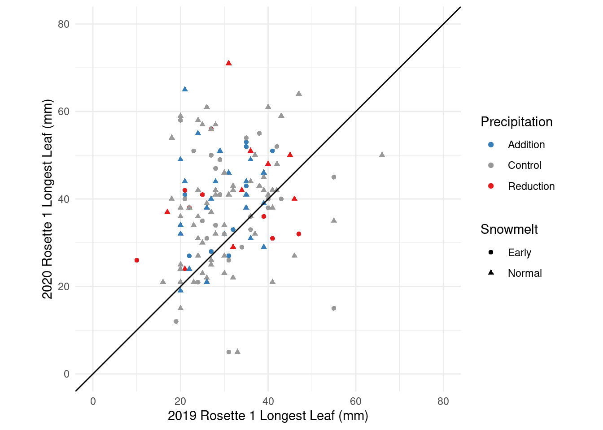
cen %>% drop_na(water_18, snow_18) %>% filter(status_18=="vegetative", status_19=="vegetative") %>%
ggplot(aes(x=r1_leaves_18, y=r1_leaves_19, color=water_18, shape=snow_18)) + geom_point() + geom_abline(intercept=0, slope=1) +
scale_color_manual(values=water_pal) + theme_minimal()+coord_fixed(xlim=c(0,100), ylim=c(0,100)) +
labs(x="2018 Rosette 1 # Leaves", y="2019 Rosette 1 # Leaves", color="Precipitation", shape="Snowmelt")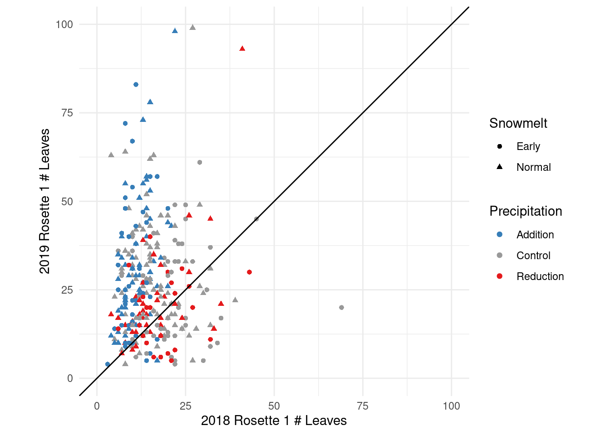
cen %>% drop_na(water_19, snow_19) %>% filter(status_19=="vegetative", status_20=="vegetative") %>%
ggplot(aes(x=r1_leaves_19, y=r1_leaves_20, color=water_19, shape=snow_19)) + geom_point() + geom_abline(intercept=0, slope=1) +
scale_color_manual(values=water_pal) + theme_minimal()+ coord_fixed(xlim=c(0,100), ylim=c(0,100)) +
labs(x="2019 Rosette 1 # Leaves", y="2020 Rosette 1 # Leaves", color="Precipitation", shape="Snowmelt")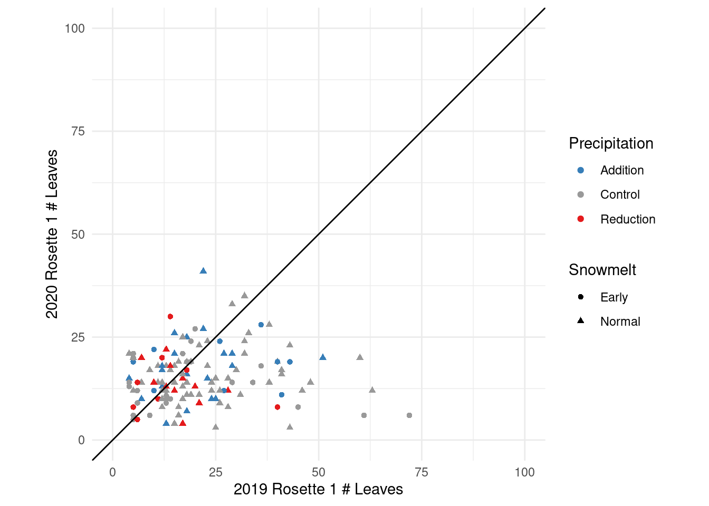
Plant size vs. treatments
ggplot(drop_na(cen18, water, snow), aes(x=water, color=snow, y=r1_longest)) + geom_boxplot() + scale_color_manual(values=snow_pal) + labs(x="Precipitation", y="2019 Rosette 1 Longest Leaf (mm)", color="Snowmelt")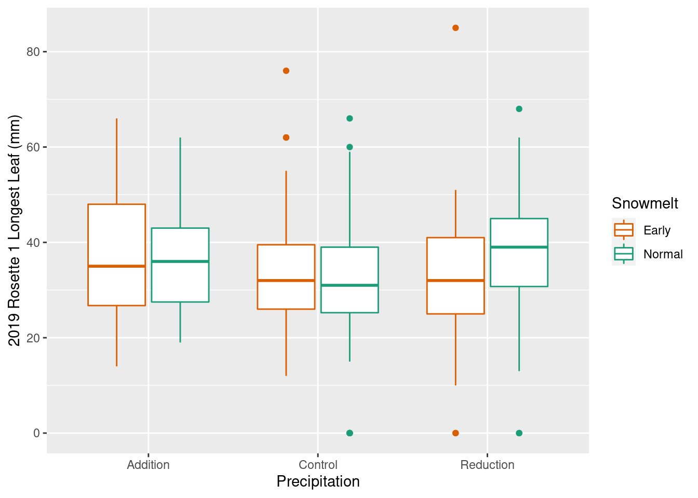
ggplot(drop_na(cen18, water, snow), aes(x=water, color=snow, y=r1_leaves)) + geom_boxplot() + scale_color_manual(values=snow_pal)+ labs(x="Precipitation", y="2019 Rosette 1 # Leaves", color="Snowmelt")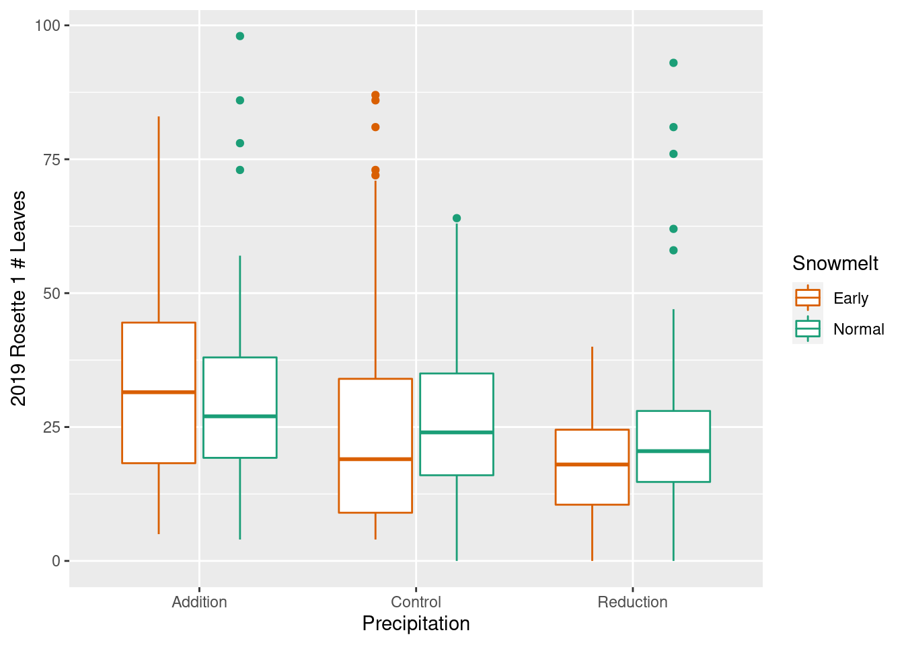
ggplot(drop_na(cen19, water, snow), aes(x=water, color=snow, y=r1_longest)) + geom_boxplot() + scale_color_manual(values=snow_pal) + labs(x="Precipitation", y="2019 Rosette 1 Longest Leaf (mm)", color="Snowmelt")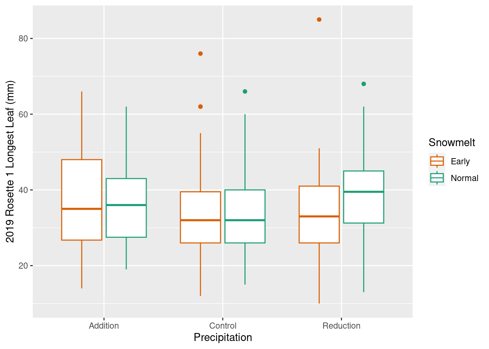
ggplot(drop_na(cen19, water, snow), aes(x=water, color=snow, y=r1_leaves)) + geom_boxplot() + scale_color_manual(values=snow_pal)+ labs(x="Precipitation", y="2019 Rosette 1 # Leaves", color="Snowmelt")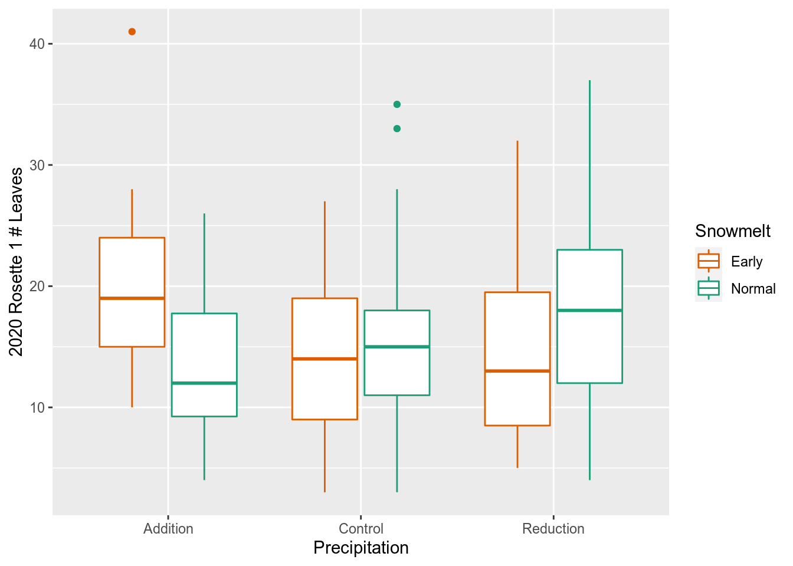
ggplot(drop_na(cen20, water, snow), aes(x=water, color=snow, y=r1_longest)) + geom_boxplot() + scale_color_manual(values=snow_pal) + labs(x="Precipitation", y="2020 Rosette 1 Longest Leaf (mm)", color="Snowmelt")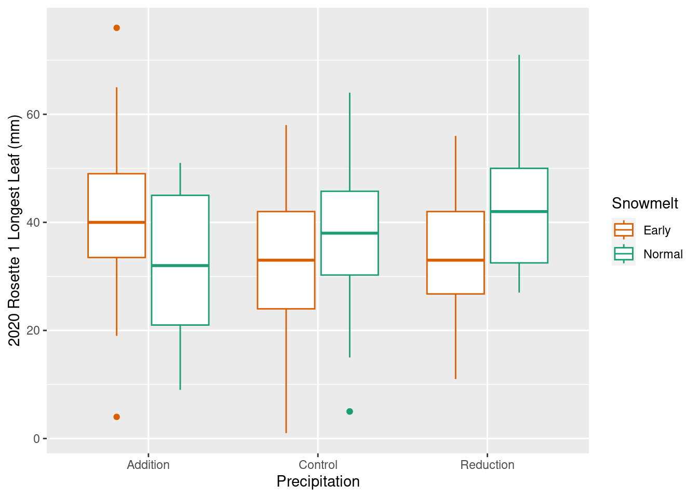
ggplot(drop_na(cen20, water, snow), aes(x=water, color=snow, y=r1_leaves)) + geom_boxplot() + scale_color_manual(values=snow_pal) + labs(x="Precipitation", y="2020 Rosette 1 # Leaves", color="Snowmelt")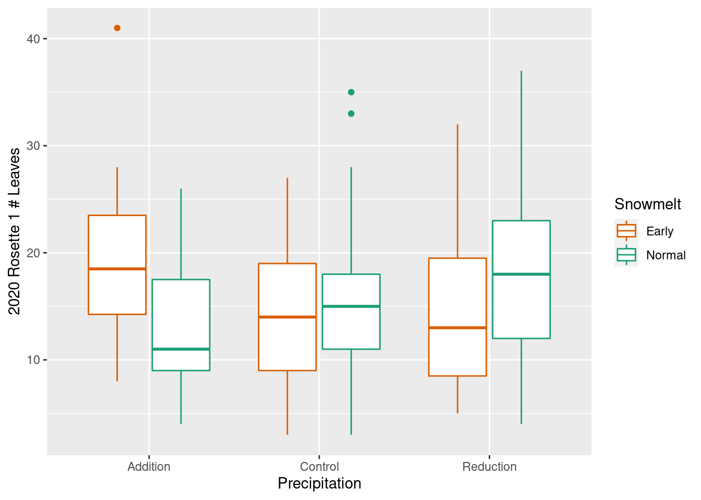
Leaf traits
ggplot(lt, aes(x=wet_weight_g, y=dry_weight_g)) + geom_point() + geom_abline(slope=1, intercept = 0) + geom_abline(slope=1-median(lt$water_content), intercept = 0)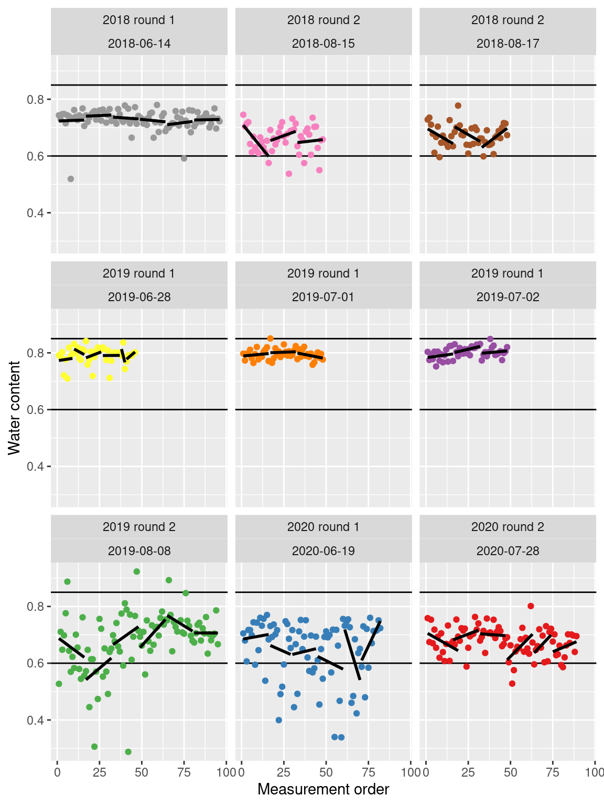
ggplot(lt, aes(x=leaf_area_cm2, y=dry_weight_g)) + geom_point() + geom_smooth(method="lm")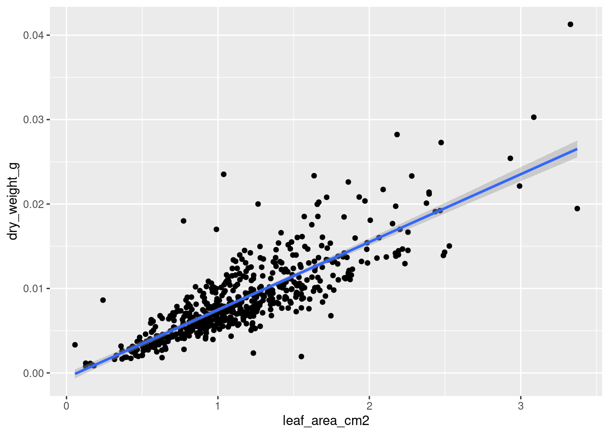
ggplot(lt, aes(x=leaf_area_cm2, y=wet_weight_g)) + geom_point() + geom_smooth(method="lm")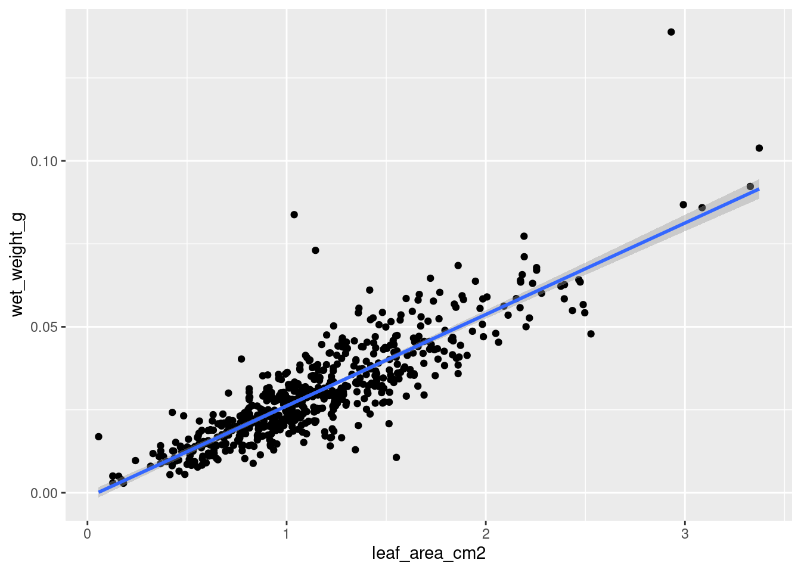
ggplot(lt, aes(x=water, color=snow, y = sla)) + geom_boxplot() + scale_color_manual(values=snow_pal) + labs(x="Precipitation", y="Specific Leaf Area (cm2/g)", color="Snowmelt") + facet_wrap(vars(year, round), nrow=1) + scale_y_continuous(limits=c(0,300))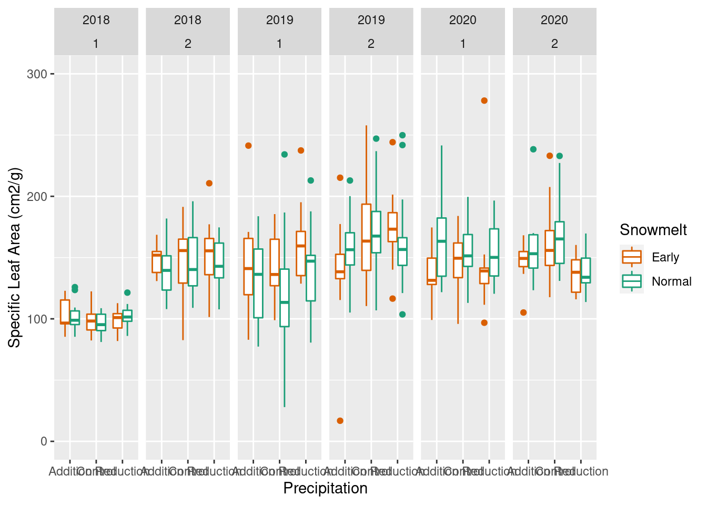
ggplot(lt, aes(x=sla, y=water_content, color=water, shape=snow, linetype=snow)) + geom_point() + scale_color_manual(values=water_pal) + theme_minimal() +
theme(legend.key.size = unit(2, "lines"))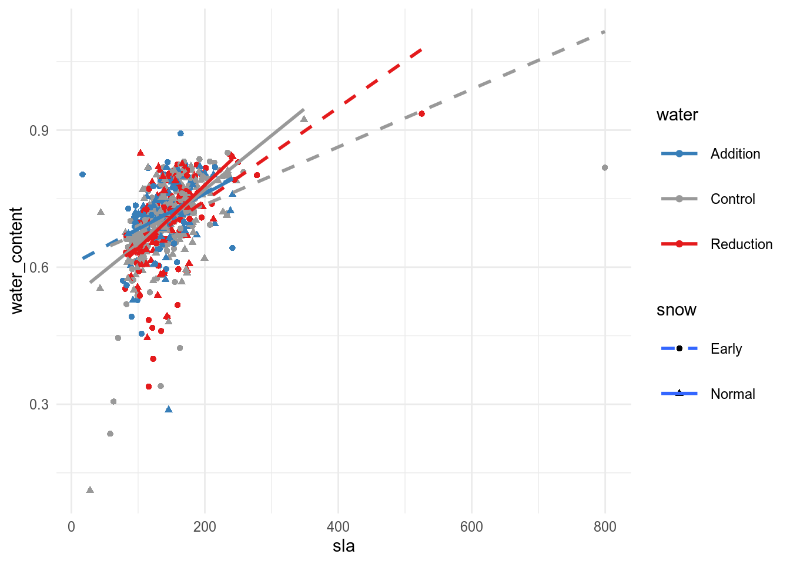
ggplot(lt, aes(x=water, color=snow, y = water_content)) + geom_boxplot() + scale_color_manual(values=snow_pal) + labs(x="Precipitation", y="Water content", color="Snowmelt") + facet_wrap(vars(year, round), nrow=1)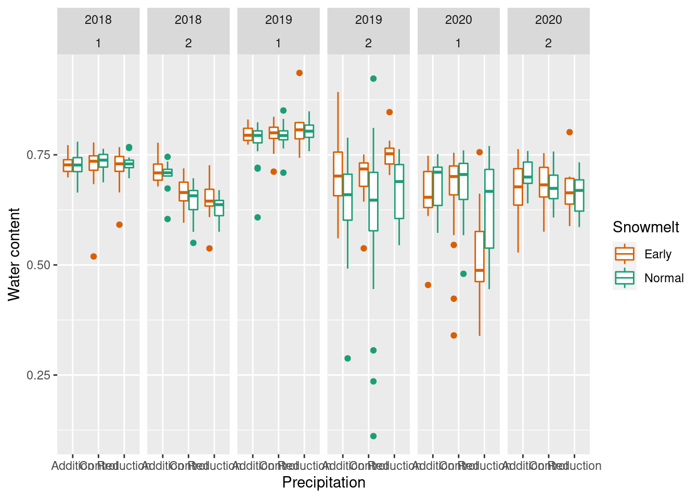
ggplot(lt, aes(x=water, color=snow, y = trichome_density)) + geom_boxplot() + scale_color_manual(values=snow_pal) + labs(x="Precipitation", y="Trichome density (/cm2)", color="Snowmelt") + facet_wrap(vars(year, round), nrow=1)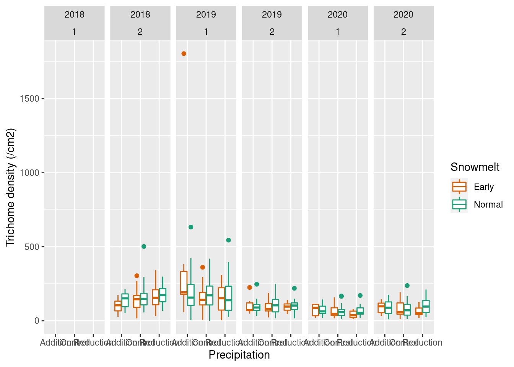
Physiology traits
# plot all the LICOR variables by date
licor_date_pal <- sample(rainbow(nlevels(factor(licor$date))))
licor %>% pivot_longer(Photo:StableF) %>% mutate(index=row_number()) %>% filter(!name %in% c("Area","BLC_1","BLCond","StmRat")) %>%
ggplot(aes(x=index, y= value, color=factor(date), shape=year)) + facet_wrap(vars(name), scales="free_y", ncol=4) + geom_point() + scale_color_manual(values=licor_date_pal, guide=F) + theme_dark() + labs(x="Measurement", y="", shape="Year")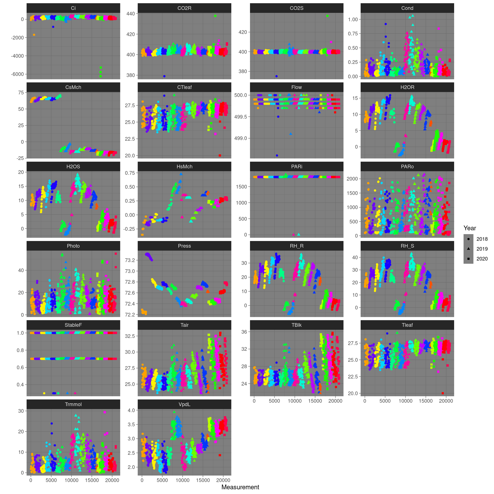
licor %>% ggplot(aes(x=Cond, y= Photo, color=factor(date), linetype=year, shape=year)) + geom_point() + geom_smooth(method="lm", se=F) + scale_linetype_manual(values=c(3,1,4)) + scale_color_manual(values=licor_date_pal, guide=F) + theme_dark()licor %>% ggplot(aes(y=Photo/Cond, x=factor(date), color=year)) + geom_boxplot(size=1.5) +
scale_y_continuous(limits=c(0,350)) + scale_color_manual(values=year_pal) + scale_x_discrete(guide = guide_axis(angle = 90)) + theme_minimal()licor %>% left_join(treatments)%>% ggplot(aes(y=Photo/Cond, x=factor(date), color=water)) +
geom_boxplot(position=position_dodge2(preserve="single")) +
scale_y_continuous(limits=c(0,350)) + scale_color_manual(values=water_pal) + scale_x_discrete(guide = guide_axis(angle = 90)) + theme_minimal()
ggplot(wue, aes(x=water, color=snow, y = photosynthesis)) + geom_boxplot() + scale_color_manual(values=snow_pal) + labs(x="Precipitation", y="Photosynthesis", color="Snowmelt") + facet_wrap(vars(year), nrow=1)photo.mod <- lmer(photosynthesis ~ year * snow * water + (1|plot), data=wue.subplot)
anova(photo.mod) %>% kable(digits=3)| Sum Sq | Mean Sq | NumDF | DenDF | F value | Pr(>F) | |
|---|---|---|---|---|---|---|
| year | 567.454 | 283.727 | 2 | 54 | 7.358 | 0.001 |
| snow | 0.128 | 0.128 | 1 | 54 | 0.003 | 0.954 |
| water | 136.665 | 68.333 | 2 | 54 | 1.772 | 0.180 |
| year:snow | 34.549 | 17.274 | 2 | 54 | 0.448 | 0.641 |
| year:water | 132.461 | 33.115 | 4 | 54 | 0.859 | 0.495 |
| snow:water | 18.132 | 9.066 | 2 | 54 | 0.235 | 0.791 |
| year:snow:water | 14.586 | 3.647 | 4 | 54 | 0.095 | 0.984 |
ggplot(wue, aes(x=water, color=snow, y = conductance)) + geom_boxplot() + scale_color_manual(values=snow_pal) + labs(x="Precipitation", y="Conductance", color="Snowmelt") + facet_wrap(vars(year), nrow=1)cond.mod <- lmer(conductance ~ year * snow * water + (1|plot), data=wue.subplot)
anova(cond.mod) %>% kable(digits=3)| Sum Sq | Mean Sq | NumDF | DenDF | F value | Pr(>F) | |
|---|---|---|---|---|---|---|
| year | 0.616 | 0.308 | 2 | 54 | 48.772 | 0.000 |
| snow | 0.008 | 0.008 | 1 | 54 | 1.276 | 0.264 |
| water | 0.159 | 0.079 | 2 | 54 | 12.573 | 0.000 |
| year:snow | 0.011 | 0.006 | 2 | 54 | 0.894 | 0.415 |
| year:water | 0.106 | 0.026 | 4 | 54 | 4.180 | 0.005 |
| snow:water | 0.009 | 0.004 | 2 | 54 | 0.702 | 0.500 |
| year:snow:water | 0.013 | 0.003 | 4 | 54 | 0.497 | 0.738 |
ggplot(wue, aes(x=water, color=snow, y = WUE)) + geom_boxplot() + scale_color_manual(values=snow_pal) + labs(x="Precipitation", y="Water use efficiency (photo/cond)", color="Snowmelt") + facet_wrap(vars(year), nrow=1)WUE.mod <- lmer(WUE ~ year * snow * water + (1|plot), data=wue.subplot)
anova(WUE.mod) %>% kable(digits=3)| Sum Sq | Mean Sq | NumDF | DenDF | F value | Pr(>F) | |
|---|---|---|---|---|---|---|
| year | 84706.814 | 42353.407 | 2 | 54 | 102.797 | 0.000 |
| snow | 1332.992 | 1332.992 | 1 | 54 | 3.235 | 0.078 |
| water | 15447.119 | 7723.559 | 2 | 54 | 18.746 | 0.000 |
| year:snow | 922.159 | 461.079 | 2 | 54 | 1.119 | 0.334 |
| year:water | 5595.954 | 1398.989 | 4 | 54 | 3.396 | 0.015 |
| snow:water | 701.358 | 350.679 | 2 | 54 | 0.851 | 0.433 |
| year:snow:water | 379.835 | 94.959 | 4 | 54 | 0.230 | 0.920 |
Floral traits
Floral morphology, nectar, phenology, seeds
Floral trait correlations
ggpairs(mt %>% select(corolla_length, corolla_width, style_length, anther_max, anther_min, sepal_width))ggplot(nt, aes(x=nectar_24_h_ul, y = nectar_conc)) + geom_point() + labs(x=traitnames[["nectar_conc"]], y=traitnames[["nectar_24_h_ul"]]) + geom_smooth(se=F)
Floral plasticity: water treatments and snowmelt treatments
This is a split-plot analysis, based on the original experimental design. The models use:
- mnps.subplot, the 24 * 3 subplot means within each year
- snow, the snowmelt treatment (except for plot 2 in 2019)
- water, the water treatments with mock rainouts and controls combined
- plot as a random effect (subplots vary within this larger unit)
The models are specified as:
lmer(trait ~ year * snow * water + (1|plot), data = mnps.subplot)- The models for nectar volume and total sugar are singular (variance at plot level near 0)
- Removing the interactions with year does not make those two models not singular
- The model fits are mostly singular when a random effect of plotid (subplot) is added for repeated measures among years
options(contrasts = c("contr.sum", "contr.poly"))
mt.mod <- mt.mod.test <- mod.emm <- mod.emm.snow <- mt.mod.plot <- list()
for(tr in traits) {
mt.mod[[tr]] <- lmer(mnps.subplot[[tr]] ~ year * snow * water + (1|plot), data=mnps.subplot)
mt.mod.test[[tr]] <- anova(mt.mod[[tr]])
mod.emm[[tr]] <- summary(emmeans(ref_grid(mt.mod[[tr]]), ~ year + snow * water))
mod.emm.snow[[tr]] <- summary(emmeans(ref_grid(mt.mod[[tr]]), ~ snow))
# mt.mod.plot[[tr]] <-
# ggplot(mod.emm[[tr]] %>% mutate(year=factor(year, levels=2018:2020)), aes(x=water, color=snow, y = emmean)) + facet_wrap(vars(year), nrow=1) +
# labs(x="Precipitation", y=traitnames[[tr]], color="Snowmelt") +
# geom_point(data=mnps.subplot, aes_string(x="water", color="snow", y = tr), inherit.aes = F, position=position_dodge(0.7)) +
# geom_point(position=position_dodge(0.7), size=4, shape=0) +
# geom_linerange(aes(ymin=emmean-SE, ymax=emmean+SE), position=position_dodge2(0.7)) +
# guides(x=guide_axis(angle = 90)) + scale_color_manual(values=snow_pal)
# print(mt.mod.plot[[tr]])
#cat(paste(tr,"\n"))
#print(mt.mod.test[[tr]])
}
mt.mod.tests <- map_dfr(mt.mod.test, tidy, .id="trait")
mt.mod.tests %>% print_anova_table(mt.mod)| trait | year | snow | water | year:snow | year:water | snow:water | year:snow:water | singular | R2m |
|---|---|---|---|---|---|---|---|---|---|
| corolla_length | 1.1 x 10-7 | 0.66 | 0.066 | 0.96 | 0.62 | 0.89 | 0.79 | FALSE | 0.4662908 |
| style_length | 3.1 x 10-7 | 0.76 | 0.12 | 0.99 | 0.56 | 0.67 | 0.19 | FALSE | 0.4619458 |
| corolla_width | 1.3 x 10-13 | 0.73 | 3.2 x 10-4 | 0.75 | 0.29 | 0.67 | 0.15 | FALSE | 0.6577845 |
| sepal_width | 0.90 | 0.85 | 2.1 x 10-3 | 0.18 | 8.2 x 10-3 | 0.82 | 0.18 | FALSE | 0.3598053 |
| nectar_24_h_ul | 1.9 x 10-3 | 0.044 | 0.051 | 0.20 | 0.85 | 0.71 | 0.50 | TRUE | 0.3500501 |
| nectar_conc | 8.3 x 10-10 | 0.36 | 2.9 x 10-3 | 0.51 | 0.81 | 0.23 | 0.19 | FALSE | 0.5332066 |
| nectar_sugar_24_h_mg | 7 x 10-4 | 0.23 | 0.65 | 0.20 | 0.55 | 0.58 | 0.33 | TRUE | 0.2955828 |
| height_cm | 1.1 x 10-9 | 0.046 | 0.67 | 0.22 | 0.87 | 0.42 | 0.21 | FALSE | 0.6150799 |
| open | 7.3 x 10-14 | 0.83 | 0.65 | 0.22 | 0.87 | 0.75 | 0.75 | FALSE | 0.6797274 |
| seeds_per_fruit | 1.6 x 10-6 | 0.44 | 0.35 | 0.18 | 0.046 | 0.038 | 0.051 | TRUE | 0.4750098 |
| seeds_est | 6.1 x 10-3 | 0.53 | 0.79 | 4.1 x 10-3 | 0.20 | 0.37 | 0.71 | FALSE | 0.3851464 |
| fruits_nonaborted | 0.19 | 0.41 | 0.36 | 0.037 | 0.36 | 0.38 | 0.56 | FALSE | 0.2783753 |
| flowers_est | 0.49 | 0.68 | 0.61 | 0.097 | 0.21 | 0.22 | 0.61 | FALSE | 0.1965573 |
| prop_infested | 8.2 x 10-5 | 0.17 | 0.49 | 0.032 | 0.78 | 0.34 | 0.27 | FALSE | 0.3325936 |
| prop_aborted | 9.1 x 10-4 | 0.17 | 0.89 | 0.49 | 0.77 | 0.26 | 0.65 | FALSE | 0.2900036 |
| seeds_per_flower | 7.5 x 10-5 | 0.12 | 0.48 | 0.049 | 0.22 | 0.079 | 0.74 | TRUE | 0.4273719 |
traits.include <- traits[c(1:4,8,5:7,13)]
mnps.subplot.long <- mnps.subplot %>% select(all_of(traits.include), water, snow, year, VWC, sun_date, precip_est_mm) %>%
pivot_longer(all_of(traits.include), names_to="trait") %>%
mutate(trait = fct_relevel(trait, traits.include), snow=fct_relevel(snow, "Normal"))
mnps.plantyr.long <- mnps.plantyr %>% select(all_of(traits.include), water, snow, year, VWC, sun_date, precip_est_mm) %>%
pivot_longer(all_of(traits.include), names_to="trait") %>%
mutate(trait = fct_relevel(trait, traits.include), snow=fct_relevel(snow, "Normal"))
mod.emm.plots <- list()
for(i in 1:2) {
traits.plot <- list(traits.include[1:5], traits.include[6:9])[[i]]
mod.emm.plots[[i]] <- mod.emm %>% bind_rows(.id="trait") %>% filter(trait %in% traits.plot) %>%
mutate(trait = fct_relevel(trait, traits.plot), snow=fct_relevel(snow, "Normal")) %>%
ggplot(aes(x=water, color=snow)) +
facet_grid(trait ~ year, scales="free_y", labeller = as_labeller(c(traitnames, set_names(2018:2020))), switch="y") +
geom_violin(data=mnps.plantyr.long %>% drop_na(value, water) %>% filter(trait %in% traits.plot), aes(y=value),
position=position_dodge(width=0.8), show.legend=F) +
#geom_point(data=mnps.subplot.long %>% filter(trait %in% traits.plot) , aes(y=value),
# position=position_dodge(width=0.6), shape=4) +
geom_linerange(aes(ymin=emmean-SE, ymax=emmean+SE,), position=position_dodge(width=0.8), size=2, show.legend=F) +
geom_point(aes(y=emmean), position=position_dodge(width=0.8), shape="-", size=16) +
labs(x="Precipitation", y="", color="Snowmelt") +
coord_cartesian(ylim=c(0,NA)) + scale_y_continuous(position="right", expand=expansion(mult=c(0,0.05)))+
scale_x_discrete(guide=guide_axis(angle=90)) +
scale_color_manual(values=snow_pal, guide=guide_legend(override.aes = list(shape=15, size=5))) +
theme_minimal() + theme(text=element_text(color="black", size=14), axis.text = element_text(color="black"),
panel.border = element_rect(fill=NA, colour = "black"), panel.spacing=unit(12, "pt"),
legend.position = "top")
if(i !=2) mod.emm.plots[[i]] <- mod.emm.plots[[i]] + guides(color=F)
}
grid.arrange(mod.emm.plots[[1]], mod.emm.plots[[2]], nrow=1)Compensation of water addition for early snowmelt
#compare early snowmelt + addition vs. normal snowmelt + control
emm.mod <- mt.mod.glht <- list()
mnps.subplot$snowwater <- paste0(mnps.subplot$snow, mnps.subplot$water)
library(multcomp)#careful, this loads MASS, which overrides dplyr::select
for(tr in traits) {
#emm.mod[[tr]] <- emmeans(mt.mod[[tr]], ~ water * snow, var=tr)
mt.mod.glht[[tr]] <- lmer(mnps.subplot[[tr]] ~ snowwater + year+ (1|plot), data=mnps.subplot) %>% # drop year??
glht(linfct = mcp(snowwater = c("EarlyAddition - NormalControl = 0")))
}
map_dfr(mt.mod.glht, ~ tibble(EarlyAddition_minus_NormalControl = coef(.x), p=summary(.x)$test$pvalues), .id="trait") %>% kable(digits=3)| trait | EarlyAddition_minus_NormalControl | p |
|---|---|---|
| corolla_length | 0.811 | 0.146 |
| style_length | 0.689 | 0.214 |
| corolla_width | 0.168 | 0.044 |
| sepal_width | 0.057 | 0.361 |
| nectar_24_h_ul | 0.098 | 0.687 |
| nectar_conc | -2.855 | 0.080 |
| nectar_sugar_24_h_mg | -0.029 | 0.686 |
| height_cm | -3.870 | 0.045 |
| open | -0.013 | 0.982 |
| seeds_per_fruit | -0.491 | 0.366 |
| seeds_est | -5.256 | 0.828 |
| fruits_nonaborted | -1.472 | 0.789 |
| flowers_est | 4.765 | 0.532 |
| prop_infested | 0.067 | 0.069 |
| prop_aborted | 0.091 | 0.095 |
| seeds_per_flower | -0.669 | 0.035 |
detach("package:multcomp", unload = TRUE); detach("package:TH.data", unload = TRUE); detach("package:MASS", unload = TRUE)Floral plasticity: water treatments and snowmelt offset
The differences in snowmelt dates vary among years and plots, so this analysis uses a melt date offset. The models use:
- mnps.subplot, the 24 * 3 subplot means within each year
- water, the water treatments with mock rainouts and controls combined
- melt_offset, the number of days between the snowmelt date (when the light entering the HOBO logger exceeds 10,000 lux) and the mean snowmelt date for the normal plots in that year (according to snow)
- plotid (subplot) as a random effect (plants vary within this larger unit)
The models are specified as:
lmer(trait ~ year * water * melt_offset + (1|plotid), data = mnps.subplot)options(contrasts = c("contr.sum", "contr.poly"))
mt.mod.raw <- mt.mod.plantyr <- mt.mod.subplot <- mt.mod.subplot.test <- mt.mod.plot <- list()
for(tr in traits) {
#mt.mod.raw[[tr]] <- lmer(mt[[tr]] ~ year * water * melt_offset + (1|plotid) + (1|plantid), data=mt)
#mt.mod.plantyr[[tr]] <- lmer(mt.plantyr[[tr]] ~ year * water * melt_offset + (1|plotid), data=mt.plantyr)
mt.mod.subplot[[tr]] <- lmer(mnps.subplot[[tr]] ~ year * water * melt_offset + (1|plot), data=mnps.subplot)
mnps.subplot[[paste0("fit.",tr)]] <- NA
mnps.subplot[[paste0("fit.",tr)]][!is.na(mnps.subplot[[tr]])]<- predict(mt.mod.subplot[[tr]], re.form=NA)
mt.mod.subplot.test[[tr]] <- anova(mt.mod.subplot[[tr]])
mt.mod.plot[[tr]] <-
ggplot(mnps.subplot, aes_string(x="melt_offset", color="water", y = tr)) + geom_point() +
geom_line(data=mnps.subplot %>% drop_na(paste0("fit.",tr)), aes_string(y=paste0("fit.",tr)), size=2)+
scale_color_manual(values=water_pal)+ facet_wrap(vars(year))+
labs(x="Offset from mean normal snow melt date (days)", y=traitnames[[tr]], color="Precipitation")
print(mt.mod.plot[[tr]])
}

mt.mod.subplot.tests <- map_dfr(mt.mod.subplot.test, tidy, .id="trait")
mt.mod.subplot.tests %>% print_anova_table(mt.mod.subplot)| trait | year | water | melt_offset | year:water | year:melt_offset | water:melt_offset | year:water:melt_offset | singular | R2m |
|---|---|---|---|---|---|---|---|---|---|
| corolla_length | 4.5 x 10-5 | 0.39 | 0.47 | 0.85 | 0.76 | 0.64 | 0.77 | FALSE | 0.4773744 |
| style_length | 2.5 x 10-6 | 0.53 | 0.62 | 0.85 | 0.53 | 0.27 | 0.31 | TRUE | 0.4694666 |
| corolla_width | 1 x 10-8 | 3.3 x 10-4 | 0.76 | 0.084 | 0.74 | 0.17 | 0.35 | FALSE | 0.6558595 |
| sepal_width | 0.31 | 0.033 | 0.96 | 9 x 10-2 | 0.27 | 0.86 | 0.35 | FALSE | 0.3472040 |
| nectar_24_h_ul | 3.9 x 10-3 | 0.26 | 0.051 | 0.97 | 0.31 | 0.68 | 0.49 | TRUE | 0.3794874 |
| nectar_conc | 1.4 x 10-5 | 6.2 x 10-3 | 0.21 | 0.64 | 0.32 | 0.22 | 0.15 | FALSE | 0.5264656 |
| nectar_sugar_24_h_mg | 0.036 | 0.73 | 0.28 | 0.97 | 0.45 | 0.71 | 0.46 | TRUE | 0.2879241 |
| height_cm | 3.6 x 10-12 | 0.78 | 2 x 10-3 | 0.21 | 0.069 | 0.27 | 0.075 | TRUE | 0.6989946 |
| open | 1.9 x 10-13 | 0.84 | 0.72 | 0.72 | 0.20 | 0.91 | 0.92 | FALSE | 0.6850111 |
| seeds_per_fruit | 1.5 x 10-6 | 0.48 | 0.45 | 0.16 | 0.25 | 0.18 | 0.19 | TRUE | 0.4480388 |
| seeds_est | 7.7 x 10-5 | 0.84 | 0.69 | 0.37 | 0.065 | 0.62 | 0.53 | FALSE | 0.3450470 |
| fruits_nonaborted | 8.5 x 10-3 | 0.72 | 0.71 | 0.77 | 0.13 | 0.62 | 0.65 | FALSE | 0.2587999 |
| flowers_est | 0.77 | 0.83 | 0.99 | 0.34 | 0.21 | 0.35 | 0.46 | FALSE | 0.1806553 |
| prop_infested | 0.17 | 0.93 | 0.90 | 0.35 | 0.22 | 0.60 | 0.14 | FALSE | 0.2749680 |
| prop_aborted | 1.1 x 10-3 | 0.36 | 0.19 | 0.88 | 0.64 | 0.31 | 0.75 | FALSE | 0.3071544 |
| seeds_per_flower | 2.2 x 10-5 | 0.67 | 0.39 | 0.57 | 0.35 | 0.15 | 0.94 | TRUE | 0.3981885 |
Floral plasticity: absolute snowmelt date and estimated summer precipitation
#dropped total summer precipitation (early_precip_mm and water:early_precip_mm) since it has n = 3 years
options(contrasts = c("contr.sum", "contr.poly"))
mt.mod.raw <- mt.mod.plantyr <- mt.mod.subplot <- mt.mod.subplot.full <- mt.mod.subplot.test <- mt.mod.plot <- coef.melt.precip <-emm.melt<- emm.precip <- list()
for(tr in traits) {
#mt.mod.raw[[tr]] <- lmer(mt[[tr]] ~ sun_date * precip_est_mm + (1|plotid) + (1|plantid), data=mt)
#mt.mod.plantyr[[tr]] <- lmer(mt.plantyr[[tr]] ~ sun_date * precip_est_mm + (1|plotid), data=mt.plantyr)
mt.mod.subplot.full[[tr]] <- lmer(mnps.subplot[[tr]] ~ sun_date * precip_est_mm + (1|plot), data=mnps.subplot)
#drop interaction if not significant
if(mt.mod.subplot.full[[tr]] %>% tidy %>% filter(term=="sun_date:precip_est_mm") %>% pull(p.value) > 0.05) {
mt.mod.subplot[[tr]] <- lmer(mnps.subplot[[tr]] ~ sun_date + precip_est_mm + (1|plot), data=mnps.subplot)
} else {
mt.mod.subplot[[tr]] <- mt.mod.subplot.full[[tr]]
}
mnps.subplot[[paste0("fit.",tr)]] <- NA
mnps.subplot[[paste0("fit.",tr)]][!is.na(mnps.subplot[[tr]])]<- predict(mt.mod.subplot[[tr]], re.form=NA)
mt.mod.subplot.test[[tr]] <- anova(mt.mod.subplot[[tr]])
#Z-score the data first to get standardized slopes
mt.mod.subplot[[tr]] <- lmer(scale(mnps.subplot[[tr]]) ~ sun_date + precip_est_mm + (1|plot), data=mnps.subplot)
coef.melt.precip[[tr]] <- summary(mt.mod.subplot[[tr]])$coefficients[c("sun_date", "precip_est_mm"),]
emm.melt[[tr]] <- emtrends(mt.mod.subplot[[tr]], ~ 1, var = "sun_date")
emm.precip[[tr]] <- emtrends(mt.mod.subplot[[tr]], ~ 1, var = "precip_est_mm")
# mt.mod.plot[[tr]] <-
# ggplot(mnps.subplot, aes_string(x="sun_date", color="water", y = tr, shape="year")) + geom_point() +
# geom_line(data=mnps.subplot %>% drop_na(paste0("fit.",tr)) %>% mutate(year.water = paste(year, water)),
# aes_string(y=paste0("fit.",tr), group="year.water"), size=2)+
# scale_color_manual(values=water_pal)+
# labs(x="Snow melt date (day of year)", y=traitnames[[tr]], color="Precipitation", shape="Year")
# print(mt.mod.plot[[tr]])
}
mt.mod.subplot.coefs <- map_dfr(mt.mod.subplot, tidy, .id="trait")
mt.mod.subplot.tests <- map_dfr(mt.mod.subplot.test, tidy, .id="trait")
mt.mod.subplot.tests %>% print_anova_table(mt.mod.subplot)| trait | sun_date | precip_est_mm | sun_date:precip_est_mm | singular | R2m |
|---|---|---|---|---|---|
| corolla_length | 5.4 x 10-5 | 3.4 x 10-4 | NA | TRUE | 0.2969340 |
| style_length | 5.5 x 10-9 | 5.5 x 10-3 | NA | FALSE | 0.4125072 |
| corolla_width | 5 x 10-9 | 1.7 x 10-5 | NA | FALSE | 0.4575748 |
| sepal_width | 0.042 | 0.014 | 0.028 | FALSE | 0.1044598 |
| nectar_24_h_ul | 1.2 x 10-3 | 1.2 x 10-3 | NA | TRUE | 0.2255539 |
| nectar_conc | 4.6 x 10-12 | 2.9 x 10-4 | NA | FALSE | 0.5021596 |
| nectar_sugar_24_h_mg | 0.34 | 0.069 | NA | TRUE | 0.0628546 |
| height_cm | 1.2 x 10-15 | 0.42 | NA | FALSE | 0.6132476 |
| open | 6 x 10-20 | 0.86 | NA | FALSE | 0.6916131 |
| seeds_per_fruit | 1.6 x 10-6 | 0.36 | NA | TRUE | 0.2948010 |
| seeds_est | 4.7 x 10-5 | 0.62 | NA | FALSE | 0.2177499 |
| fruits_nonaborted | 2.6 x 10-3 | 0.38 | NA | FALSE | 0.1242059 |
| flowers_est | 0.75 | 0.52 | NA | FALSE | 0.0067217 |
| prop_infested | 5.8 x 10-3 | 0.24 | NA | FALSE | 0.1087362 |
| prop_aborted | 2.3 x 10-4 | 0.23 | NA | FALSE | 0.1710723 |
| seeds_per_flower | 4.3 x 10-7 | 0.55 | NA | TRUE | 0.3144866 |
emm.melt.df <- bind_rows(sun_date = emm.melt %>% map(as.data.frame) %>% bind_rows(.id="trait") %>% rename(trend=sun_date.trend)
,precip_est_mm = emm.precip %>% map(as.data.frame) %>% bind_rows(.id="trait") %>% rename(trend=precip_est_mm.trend)
,.id="predictor") %>% mutate(predictor=fct_relevel(predictor,"sun_date"))
# library(googlesheets4)
# write_sheet(left_join(emm.melt.df %>% mutate(traitname=traitnames[trait], .before="trait"),
# mnps.subplot %>% group_by(water) %>% select(traits) %>%
# summarize(across(traits, ~ sum(!is.na(.x)))) %>%
# pivot_longer(traits, names_to="trait", values_to="n"))
# , ss=filter(datasheets, name=="Maxfield Results"), sheet="slopes_melt")
ggplot(emm.melt.df, aes(x=fct_relevel(trait, rev(traits)), y=trend)) +
facet_wrap(vars(predictor), nrow=1, scales="free_x", labeller=labeller(predictor=c(precip_est_mm="Estimated summer precip (mm)", sun_date="Snowmelt date"))) +
geom_hline(yintercept=0) +
geom_pointrange(aes(ymin=trend - SE, ymax = trend + SE), position=position_dodge(width=0.3), size=0.4) +
labs(y="Slope and SE of z-scored trait vs. predictor", x="Floral Trait", color="Water") + scale_x_discrete(labels = traitnames) + coord_flip() + scale_color_manual(values=water_pal) +
theme(legend.position = "top")traits.include <- traits[c(1,2,4,3,8,13,5:7)]
mt.mod.subplot.full[traits.include] %>%
map_dfr(~ emmeans(.x, ~ precip_est_mm * sun_date, at=list(sun_date=range(treatments$sun_date), precip_est_mm=seq(25,150, by=25))) %>% as_tibble(), .id="trait") %>%
mutate(trait = fct_relevel(trait, traits.include)) %>%
ggplot(aes(x=sun_date, y=emmean, color=precip_est_mm, group=precip_est_mm)) +
facet_wrap(vars(trait), scales="free_y",labeller = as_labeller(traitnames))+
geom_point(data = mnps.plantyr.long, aes(y=value, shape=year)) + geom_line() +
scale_color_gradientn(colors=rev(c(water_pal[1],water_pal, water_pal[3])),
values=rev(c(1, treatments %>% group_by(water) %>% summarize(across(precip_est_mm, mean)) %>%
pull(precip_est_mm) %>% scales::rescale(from=c(25,150)),0)),
breaks=seq(25,150, by=25)) +
labs(x="Snowmelt date", y="", color="Summer\nprecipitation\n(mm)", shape="Year") +
coord_cartesian(ylim=c(0,NA)) + scale_y_continuous(expand=expansion(mult=c(0,0.05)))+
theme_minimal() + theme(text=element_text(color="black", size=14), axis.text = element_text(color="black"),
panel.border = element_rect(fill=NA, colour = "black"))Floral plasticity: soil moisture
Both snowmelt timing and summer precipitation affect soil moisture and its timing. This analysis regresses the floral traits against the mean soil moisture in a subplot. Slopes may differ among years. The models use:
- mt.plantyr, the trait data averaged by plant within year
- VWC, the summer mean of the approximately weekly mean volumetric water content in a subplot. This may need to change to a subset of the summer because it includes soil moisture taken after traits were measured. See section on within-season variation for timing of measurements in each year.
- plotid (subplot) as a random effect (plants vary within this larger unit)
The models are specified as:
lmer(trait ~ year * VWC + (1|plotid), data = mt.plantyr)- The model for total sugar is singular (variance at subplot level near 0)
options(contrasts = c("contr.sum", "contr.poly"))
mt.sm.mod <- mt.sm.mod.z <- mt.sm.mod.test <- mt.sm.mod.raw <- coef.VWC <- emm.VWC <- emm.VWC.allyears <- mt.sm.mod.plot <-list()
for(tr in traits) {
#mt.sm.mod.raw[[tr]] <- lmer(mt[[tr]] ~ year * VWC + (1|plot) + (1|plantid), data=mt)
mt.sm.mod[[tr]] <-lmer(mnps.plantyr[[tr]] ~ year * VWC + (1|plotid), data=mnps.plantyr)
mnps.plantyr[[paste0("fit.sm.",tr)]] <- NA
mnps.plantyr[[paste0("fit.sm.",tr)]][!is.na(mnps.plantyr[[tr]])]<- predict(mt.sm.mod[[tr]], re.form=NA) #TODO why jumps?
mt.sm.mod.test[[tr]] <- anova(mt.sm.mod[[tr]])
#Z-score the data first to get standardized slopes
mt.sm.mod.z[[tr]] <- lmer(scale(mnps.plantyr[[tr]]) ~ year * VWC + (1|plotid), data=mnps.plantyr)
coef.VWC[[tr]] <- summary(mt.sm.mod.z[[tr]])$coefficients["VWC",]
emm.VWC[[tr]] <- emtrends(mt.sm.mod.z[[tr]], ~ year, var = "VWC")
emm.VWC.allyears[[tr]] <- emtrends(mt.sm.mod.z[[tr]], ~ 1, var = "VWC")
# mt.sm.mod.plot[[tr]] <-
# ggplot(mnps.plantyr, aes_string(x="VWC", color="year", y = tr)) + geom_point() +
# geom_line(data=mnps.plantyr %>% drop_na(paste0("fit.sm.",tr)), aes_string(y=paste0("fit.sm.",tr)), size=2)+
# scale_color_manual(values=year_pal)+
# labs(x="Summer mean of soil moisture in subplot (VWC)", y=traitnames[[tr]], color="Year")
# print(mt.sm.mod.plot[[tr]])
}
mt.sm.mod.tests <- map_dfr(mt.sm.mod.test, tidy, .id="trait")
mt.sm.mod.tests %>% print_anova_table(mt.sm.mod)| trait | year | VWC | year:VWC | singular | R2m |
|---|---|---|---|---|---|
| corolla_length | 5.9 x 10-3 | 0.011 | 0.44 | FALSE | 0.2068999 |
| style_length | 0.18 | 1.8 x 10-3 | 0.81 | FALSE | 0.1767118 |
| corolla_width | 3.2 x 10-3 | 9.2 x 10-6 | 0.044 | TRUE | 0.2872278 |
| sepal_width | 6.8 x 10-3 | 9.2 x 10-3 | 2.9 x 10-3 | FALSE | 0.0749237 |
| nectar_24_h_ul | 0.26 | 7.4 x 10-5 | 0.10 | FALSE | 0.1591228 |
| nectar_conc | 1.6 x 10-4 | 1 x 10-2 | 0.31 | FALSE | 0.2835345 |
| nectar_sugar_24_h_mg | 3.1 x 10-3 | 1.7 x 10-3 | 0.025 | TRUE | 0.1004421 |
| height_cm | 0.51 | 0.075 | 0.17 | FALSE | 0.2177241 |
| open | 6 x 10-4 | 0.65 | 0.93 | FALSE | 0.2474151 |
| seeds_per_fruit | 0.71 | 0.98 | 0.79 | TRUE | 0.0619134 |
| seeds_est | 0.82 | 0.24 | 0.24 | FALSE | 0.0776607 |
| fruits_nonaborted | 0.80 | 0.14 | 0.29 | FALSE | 0.0368612 |
| flowers_est | 0.72 | 0.074 | 0.75 | FALSE | 0.0105290 |
| prop_infested | 0.34 | 0.95 | 0.93 | TRUE | 0.0380341 |
| prop_aborted | 0.39 | 0.69 | 0.81 | FALSE | 0.0500304 |
| seeds_per_flower | 0.82 | 0.63 | 0.68 | TRUE | 0.0755739 |
coef.VWC.df <- as.data.frame(t(as.data.frame(coef.VWC))) %>% rownames_to_column("trait")
emm.VWC.ls <- map(emm.VWC, as.data.frame)
emm.VWC.ls$sepal_width[3,] <- NA
emm.VWC.df <- bind_rows(emm.VWC.ls, .id="trait")
emm.VWC.allyears[c(1:3,5)] %>% map(as.data.frame) %>% bind_rows(.id="trait") trait 1 VWC.trend SE df lower.CL upper.CL
1 corolla_length overall 0.1227127 0.04671148 33.49110 0.02773038 0.2176950
2 style_length overall 0.1483988 0.04408395 29.86842 0.05835070 0.2384468
3 corolla_width overall 0.1618543 0.03687202 24.35518 0.08581290 0.2378957
4 nectar_24_h_ul overall 0.2169521 0.04377747 22.59443 0.12630142 0.3076027# library(googlesheets4)
# write_sheet(left_join(emm.VWC.df %>% mutate(predictor="VWC", .before=1) %>%
# mutate(traitname=traitnames[trait], .before="trait"),
# mnps.subplot %>% group_by(year) %>% select(traits) %>%
# summarize(across(traits, ~ sum(!is.na(.x)))) %>%
# pivot_longer(traits, names_to="trait", values_to="n"))
# , ss=filter(datasheets, name=="Maxfield Results"), sheet="slopes_VWC")
ggplot(emm.VWC.df %>% drop_na(), aes(x=trait, y=VWC.trend, color=year)) +
geom_hline(yintercept=0) + geom_pointrange(aes(ymin=VWC.trend - SE, ymax = VWC.trend + SE), position=position_dodge(width=0.3), size=0.4) +
labs(y="Slope of z-scored trait vs. mean annual soil moisture", x="Floral Trait", color="Year") +
theme_classic() + scale_x_discrete(labels = traitnames) + coord_flip() + scale_color_manual(values=year_pal)traits.include <- traits[c(1,2,4,3,8,13,5:7)]
mt.sm.mod[traits.include] %>%
map_dfr(~ emmeans(.x, ~ year*VWC, at=list(VWC=range(sm.subplotyear$VWC))) %>% as_tibble(), .id="trait") %>%
mutate(trait = fct_relevel(trait, traits.include)) %>%
ggplot(aes(x=VWC, y=emmean, color=year, group=year)) +
facet_wrap(vars(trait), scales="free_y",labeller = as_labeller(traitnames))+
geom_point(data = mnps.plantyr.long, aes(y=value, color=year)) +
geom_line(size=2) +
scale_color_manual(values=year_pal) +
labs(x="Summer mean of soil moisture in subplot (%VWC)", y="", color="Year") +
coord_cartesian(ylim=c(0,NA)) + scale_y_continuous(expand=expansion(mult=c(0,0.05)))+
theme_minimal() + theme(text=element_text(color="black", size=14), axis.text = element_text(color="black"),
panel.border = element_rect(fill=NA, colour = "black"))Traits for plasticity paper
bind_rows(sun_date = emm.melt %>% map(as.data.frame) %>% bind_rows(.id="trait") %>% rename(trend=sun_date.trend),
precip_est_mm = emm.precip %>% map(as.data.frame) %>% bind_rows(.id="trait") %>% rename(trend=precip_est_mm.trend), .id="predictor") %>% mutate(predictor=fct_relevel(predictor,"sun_date")) %>%
filter(trait %in% traits[c(1:8, 13)]) %>%
ggplot(aes(x=fct_relevel(trait, rev(traits)), y=trend)) +
facet_wrap(vars(predictor), nrow=1, scales="free_x", labeller=labeller(predictor=c(precip_est_mm="Summer precip (mm)", sun_date="Snowmelt date"))) +
geom_hline(yintercept=0) +
geom_pointrange(aes(ymin=trend - SE, ymax = trend + SE), position=position_dodge(width=0.3), size=0.4) +
labs(y="Slope of z-scored trait vs. predictor", x="Floral Trait", color="Water") +
scale_x_discrete(labels = traitnames) + coord_flip() +
theme(legend.position = "top")ggplot(emm.VWC.df %>% drop_na() %>% filter(trait %in% traits[c(1:8, 13)]), aes(x=fct_relevel(trait, rev(traits)), y=VWC.trend, color=year)) +
geom_hline(yintercept=0) + geom_pointrange(aes(ymin=VWC.trend - SE, ymax = VWC.trend + SE), position=position_dodge(width=0.3), size=0.4) +
labs(y="Slope of z-scored trait vs. mean annual soil moisture", x="Floral Trait", color="Year") +
theme_classic() + scale_x_discrete(labels = traitnames) + coord_flip() + scale_color_manual(values=year_pal)Multivariate response
mt.morph <- mt[,c("corolla_length", "corolla_width","style_length","anther_max","anther_min","year","VWC")] %>% drop_na(1:5) #drop sepal_width
mt.pca <- prcomp(mt.morph[,-(6:7)], scale.=TRUE)
mt.morph.pca <- mt.morph %>%
bind_cols(as.data.frame(mt.pca$x)) %>%
tibble::rowid_to_column("index") %>%
mutate(x_0=0,y_0=0,
x_1=-corolla_width/2,y_1=corolla_length,
x_2= corolla_width/2,y_2=corolla_length) %>%
pivot_longer(c(starts_with("x"),starts_with("y")), names_to=c(".value", "point"), names_sep="_")
scl <- 100
zoom <- 5.5
mt.pca.vars <- as.data.frame(mt.pca$rotation) %>% rownames_to_column("variable")
mt.pca.labs <- paste0("PC", 1:2, " (", round(100*mt.pca$sdev[1:2]^2/sum(mt.pca$sdev^2), 0), "% explained var.)")
ggplot(mt.morph.pca) + theme_classic() +
geom_polygon(aes(x= x/scl+PC1, y= y/scl+PC2, group=index, color=VWC, fill=VWC)) +
#geom_point(aes(x=PC1, y=PC2, size=sepal_width/2), color="darkgreen") +
geom_point(aes(x=PC1, y=PC2 + anther_min/scl), color="yellow", size=0.3) +
geom_point(aes(x=PC1, y=PC2 + anther_max/scl), color="yellow", size=0.3) +
geom_point(aes(x=PC1, y=PC2 + style_length/scl), color="grey60", size=0.5, shape=4) +
geom_segment(data=mt.pca.vars,aes(x=0, y=0, xend=PC1*zoom, yend=PC2*zoom),
arrow = arrow(length = unit(1/2, "picas")), color="black") +
geom_text(data =mt.pca.vars, aes(label = gsub("_"," ",variable), x = PC1*zoom*1.4, y = PC2*zoom*1.4,
angle = (180/pi) * atan(PC2/PC1), hjust = 0), color="black")+
scale_size_identity() + coord_fixed() +
scale_fill_viridis(direction=-1, option="plasma") + scale_color_viridis(direction=-1, option="plasma") +
labs(x=mt.pca.labs[1], y=mt.pca.labs[2])ggsave("images/mt_morph_pca_noSW.pdf", height=15, width=20, device=cairo_pdf)
ggplot(mt, aes(x=corolla_width, y=corolla_length, color=VWC)) + scale_color_viridis(direction=-1, option="plasma") + geom_point() + theme_minimal()ggplot(mt, aes(y=style_length / corolla_length, x=VWC, color=VWC)) + scale_color_viridis(direction=-1, option="plasma") + geom_point() + theme_minimal() + geom_smooth()options(contrasts = c("contr.treatment", "contr.poly"))
mt.cap <- capscale(scale(mt.morph[,-(6:7)]) ~ VWC + year, data=mt.morph)
mt.capCall: capscale(formula = scale(mt.morph[, -(6:7)]) ~ VWC + year, data =
mt.morph)
Inertia Proportion Rank
Total 5.0000 1.0000
Constrained 1.0367 0.2073 3
Unconstrained 3.9633 0.7927 5
Inertia is mean squared Euclidean distance
Species scores projected from 'scale' 'mt.morph[, -(6:7)]'
Eigenvalues for constrained axes:
CAP1 CAP2 CAP3
0.9909 0.0447 0.0011
Eigenvalues for unconstrained axes:
MDS1 MDS2 MDS3 MDS4 MDS5
2.6291 0.6967 0.4033 0.1385 0.0957 anova(mt.cap, by="term") %>% tidy %>% kable| term | df | Variance | statistic | p.value |
|---|---|---|---|---|
| VWC | 1 | 0.4492375 | 107.79564 | 0.001 |
| year | 2 | 0.5874772 | 70.48329 | 0.001 |
| Residual | 951 | 3.9632853 | NA | NA |
autoplot(mt.cap) + guides(color=F, shape=F)mt.morph.wm <- mt[,c("corolla_length", "corolla_width","style_length","anther_max","anther_min","year","water","melt_offset")] %>% drop_na(1:6) #and nectar (19,20) too
mt.cap.wm <- capscale(scale(mt.morph.wm[,-(6:8)]) ~ year * melt_offset * water, data=mt.morph.wm)
mt.cap.wmCall: capscale(formula = scale(mt.morph.wm[, -(6:8)]) ~ year *
melt_offset * water, data = mt.morph.wm)
Inertia Proportion Rank
Total 5.0000 1.0000
Constrained 1.1459 0.2292 5
Unconstrained 3.8541 0.7708 5
Inertia is mean squared Euclidean distance
Species scores projected from 'scale' 'mt.morph.wm[, -(6:8)]'
Eigenvalues for constrained axes:
CAP1 CAP2 CAP3 CAP4 CAP5
1.0587 0.0517 0.0284 0.0048 0.0023
Eigenvalues for unconstrained axes:
MDS1 MDS2 MDS3 MDS4 MDS5
2.5579 0.6711 0.3985 0.1337 0.0930 anova(mt.cap.wm, by="term") %>% tidy %>% kable| term | df | Variance | statistic | p.value |
|---|---|---|---|---|
| year | 2 | 0.9178296 | 111.5715011 | 0.001 |
| melt_offset | 1 | 0.0344690 | 8.3801187 | 0.001 |
| water | 2 | 0.1267323 | 15.4055996 | 0.001 |
| year:melt_offset | 2 | 0.0080217 | 0.9751170 | 0.383 |
| year:water | 4 | 0.0289412 | 1.7590459 | 0.083 |
| melt_offset:water | 2 | 0.0062569 | 0.7605915 | 0.547 |
| year:melt_offset:water | 4 | 0.0236900 | 1.4398801 | 0.157 |
| Residual | 937 | 3.8540593 | NA | NA |
#plot CAP without interactions
autoplot(capscale(scale(mt.morph.wm[,-(6:8)]) ~ year + melt_offset + water, data=mt.morph.wm)) + guides(color=F, shape=F)Floral traits within season
No obvious effect of time within a season for corolla length/width or sepal width. The timing of trait measurements was different each year:
ggplot(sm, aes(x=yday(date))) +
facet_wrap(vars(year), ncol=1) +
geom_point(data=ph, aes(y= height_cm/2, color="Phenology (height)"))+
geom_point(data=mt, aes(y= corolla_length, color="Morphology"))+
geom_point(data=mt, aes(y= nectar_24_h_ul, color="Nectar"))+
geom_point(aes(y = VWC, color="Soil moisture")) +
geom_vline(data=meltdates, aes(xintercept=sun_date, linetype=snow), color="grey40")+
labs(x="Day of year", shape="Snow", linetype="Snow", y="", color="Measurement")+
scale_color_manual(values=c("purple","orange","grey","black"))+
scale_x_continuous(breaks=seq(120, 240, by=20))+
scale_linetype_manual(values=c(2,1)) + theme_minimal() +
theme(legend.key.size = unit(1.5, "lines"), axis.text.y=element_blank())ggplot(data=mt, aes(x=yday(date), y= corolla_length, color=water)) +
facet_wrap(vars(year), ncol=1) +
geom_point()+ geom_smooth(se=F)+
labs(y=traitnames[["corolla_length"]], x="Day of year")+
scale_color_manual(values=water_pal) + theme_minimal()ggplot(data=mt, aes(x=yday(date), y= nectar_24_h_ul, color=water)) +
facet_wrap(vars(year), ncol=1) +
geom_point()+ geom_smooth(se=F)+
labs(y=traitnames[["nectar_24_h_ul"]], x="Day of year")+
scale_color_manual(values=water_pal) + theme_minimal()ggplot(data=nt, aes(x=yday(date), y= nectar_conc, color=water)) +
facet_wrap(vars(year), ncol=1) +
geom_point()+ geom_smooth(se=F)+
labs(y=traitnames[["nectar_conc"]], x="Day of year")+
scale_color_manual(values=water_pal) + theme_minimal()Phenology
walk(list(ph18.raw, ph19.raw, ph20.raw),
function(ph.raw) {
y = ph.raw$year[1]
p <- ph.raw %>% count(plot, subplot, plotid, plantid, julian) %>% add_count(plantid, name="n_plantid") %>%
mutate(plantid = fct_reorder(plantid, as.integer(factor(paste(plotid, n_plantid))),.desc=T)) %>%
ggplot(aes(julian, plantid, fill=factor(n)))+
geom_tile()+ scale_fill_viridis(option="inferno", discrete=T) +
geom_point(aes(color=subplot, x=median(as.integer(julian))))+ scale_color_manual(values=sample(rainbow(10)))+
geom_point(aes(color=plot, x=median(as.integer(julian))), position=position_nudge(x=-0.3))+
theme_classic() + theme(panel.background = element_rect(fill="grey")) + guides(x=guide_axis(angle = 90)) +
labs(x="Day of year", y="Plant (sorted by subplot)", fill="Observations", color="Plot", title=paste(y,"phenology"))
print(p)})ggplot(ph %>% drop_na(height_cm), aes(x=julian, y=height_cm, shape=snow, color=water))+ geom_point() + geom_path(aes(group=plantid))+
facet_wrap(vars(year), ncol=1)+
geom_vline(data=meltdates, aes(xintercept=sun_date, linetype=snow))+
labs(y="Plant height",
x="Day of year", color="Precipitation", shape="Snow") +
scale_x_continuous(breaks=seq(120,240, by=20))+
scale_color_manual(values=water_pal) + theme_minimal() +
theme(legend.key.size = unit(2, "lines"))ph %>% group_by(year, snow, water, julian) %>% summarize_at(c("open","buds"), mean, na.rm=T) %>%
ggplot(aes(x=julian, y=open, shape=snow, linetype=snow, color=water))+ geom_point() +
facet_wrap(vars(year), ncol=1)+
geom_path(aes(group=paste(snow, water))) +
geom_vline(data=meltdates, aes(xintercept=sun_date, linetype=snow))+
labs(y="Mean total flowers",
x="Day of year", color="Precipitation", shape="Snow", linetype="Snow") +
scale_x_continuous(breaks=seq(120,240, by=20))+
scale_color_manual(values=water_pal) + scale_linetype_manual(values=c(2,1)) + theme_minimal() +
theme(legend.key.size = unit(2, "lines"))ph %>% group_by(year, snow, water, julian) %>% summarize_at("flowering", mean, na.rm=T) %>%
ggplot(aes(x=julian, y=flowering, shape=snow, linetype=snow, color=water))+ geom_point() +
facet_wrap(vars(year), ncol=1)+
geom_path(aes(group=paste(snow, water))) +
geom_vline(data=meltdates, aes(xintercept=sun_date, linetype=snow))+
labs(y="Proportion flowering",
x="Day of year", color="Precipitation", shape="Snow", linetype="Snow") +
scale_x_continuous(breaks=seq(120,240, by=20))+
scale_y_continuous(labels = scales::percent)+
scale_color_manual(values=water_pal) + scale_linetype_manual(values=c(2,1)) + theme_minimal() +
theme(legend.key.size = unit(2, "lines"))ph %>% group_by(year, snow, water, julian) %>% summarize_at("eggs", mean, na.rm=T) %>%
ggplot(aes(x=julian, y=eggs, shape=snow, linetype=snow, color=water))+ geom_point() +
facet_wrap(vars(year), ncol=1)+
geom_path(aes(group=paste(snow, water))) +
geom_vline(data=meltdates, aes(xintercept=sun_date, linetype=snow))+
labs(y="Mean total eggs",
x="Day of year", color="Precipitation", shape="Snow", linetype="Snow") +
scale_x_continuous(breaks=seq(120,240, by=20))+
scale_color_manual(values=water_pal) + scale_linetype_manual(values=c(2,1)) + theme_minimal() +
theme(legend.key.size = unit(2, "lines"))ph %>% group_by(year, snow, water, julian) %>% summarize_at("has_egg", mean, na.rm=T) %>%
ggplot(aes(x=julian, y=has_egg, shape=snow, linetype=snow, color=water))+ geom_point() +
facet_wrap(vars(year), ncol=1)+
geom_path(aes(group=paste(snow, water))) +
geom_vline(data=meltdates, aes(xintercept=sun_date, linetype=snow))+
labs(y="Proportion of plants with eggs",
x="Day of year", color="Precipitation", shape="Snow", linetype="Snow") +
scale_x_continuous(breaks=seq(120,240, by=20))+
scale_y_continuous(labels = scales::percent)+
scale_color_manual(values=water_pal) + scale_linetype_manual(values=c(2,1)) + theme_minimal() +
theme(legend.key.size = unit(2, "lines"))Floral display size
2020
ggplot(ph.plantid, aes(x=height_cm, y=open, color=water)) + geom_point() + geom_smooth(method="lm", se=F) + scale_color_manual(values=water_pal) + facet_wrap(vars(year), nrow=1) +
labs(x="Mean inflorescence height (cm)", y="Mean number of open flowers", color="Precipitation")ggplot(ph.plantid, aes(x=water, color=snow, y = height_cm)) +
labs(x="Precipitation", y="Mean inflorescence height (cm)", color="Snowmelt") +
geom_boxplot() + scale_color_manual(values=snow_pal) + facet_wrap(vars(year), nrow=1)ggplot(ph.plantid, aes(x=VWC, y=height_cm, color=year)) + geom_point() + geom_smooth(se=F) +
scale_color_manual(values=year_pal) + labs(x="Mean VWC", y="Mean inflorescence height (cm)") ggplot(ph.plantid, aes(x=water, color=snow, y = open)) +
labs(x="Precipitation", y="Mean number of open flowers", color="Snowmelt") +
geom_boxplot() + scale_color_manual(values=snow_pal) + facet_wrap(vars(year), nrow=1)ggplot(ph.plantid, aes(x=VWC, y=open, color=year)) + geom_point() + geom_smooth(se=F)+
scale_color_manual(values=year_pal) + labs(x="Mean VWC", y="Mean number of open flowers")Seeds
ggplot(sds %>% drop_na(plot), aes(color=water, x=fruits, y=seeds)) + geom_point() + geom_smooth(se=F) +
scale_color_manual(values=water_pal) + facet_wrap(vars(year), nrow=1) + theme_minimal() +
labs(x="Counted fruits", y="Counted seeds", color="Precipitation")for(tr in seedtraits) {
print(ggplot(sds %>% drop_na(plot), aes_string(tr, x="water", color="snow")) + geom_boxplot() +
scale_color_manual(values=snow_pal) + facet_wrap(vars(year), nrow=1) +
scale_y_continuous(trans=ifelse(tr %in% c("seeds_est", "fruits_nonaborted"),"sqrt","identity"))+
labs(x="Precipitation", y=seedtraitnames[[tr]], color="Precipitation") +
guides(x=guide_axis(angle = 90)))
print(ggplot(sds, aes_string(tr, x="VWC", color="year")) + geom_point() + geom_smooth(se=F) +
scale_color_manual(values=year_pal) +
scale_y_continuous(trans=ifelse(tr %in% c("seeds_est", "fruits_nonaborted"),"sqrt","identity"))+
labs(x="Summer mean of soil moisture in subplot (VWC)", y=seedtraitnames[[tr]], color="Year"))
}Fruiting phenology (2020)
ggplot(sds20.date.zeroed, aes(x=julian, y=fruits_nonaborted, color=water, shape=snow, linetype=snow))+geom_jitter(width=2, height=0) + stat_summary(fun="mean", geom="line") + scale_y_sqrt() + scale_color_manual(values=water_pal)+
labs(y="Nonaborted fruits", x="Day of year", color="Precipitation", shape="Snow", linetype="Snow")+ scale_linetype_manual(values=c(2,1)) + theme_minimal() +
theme(legend.key.size = unit(2, "lines"))ggplot(sds20.date.zeroed, aes(x=julian, y=seeds, color=water, shape=snow, linetype=snow))+geom_jitter(width=2, height=0) + stat_summary(fun="mean", geom="line") + scale_y_sqrt() + scale_color_manual(values=water_pal)+
labs(y="Seeds", x="Day of year", color="Precipitation", shape="Snow", linetype="Snow")+ scale_linetype_manual(values=c(2,1)) + theme_minimal() +
theme(legend.key.size = unit(2, "lines"))ggplot(sds20.date.zeroed, aes(x=julian, y=prop_infested, color=water, shape=snow, linetype=snow))+geom_jitter(width=2, height=0) + stat_summary(fun="mean", geom="line") + scale_color_manual(values=water_pal)+
labs(y="Proportion of nonaborted fruits infested", x="Day of year", color="Precipitation", shape="Snow", linetype="Snow")+ scale_linetype_manual(values=c(2,1)) +
scale_y_continuous(labels = scales::percent)+ theme_minimal() +
theme(legend.key.size = unit(2, "lines"))sds20.date.zeroed %>% group_by(snow, water, julian) %>% summarize_at("fruiting", mean, na.rm=T) %>%
ggplot(aes(x=julian, y=fruiting, shape=snow, linetype=snow, color=water))+ geom_point() +
geom_path(aes(group=paste(snow, water))) +
labs(y="Proportion fruiting (nonaborted fruits)",
x="Day of year", color="Precipitation", shape="Snow", linetype="Snow") +
scale_y_continuous(labels = scales::percent)+
scale_color_manual(values=water_pal) + scale_linetype_manual(values=c(2,1)) + theme_minimal() +
theme(legend.key.size = unit(2, "lines"))